Mathematics for Engineers · Higher Mathematics Department · Kyiv Aviation Institute
Linear Algebra
Matrix algebra, determinants, inverses, and systems of linear equations — with applications in physics and engineering.
About figures.
The diagrams in the text are exported from the PDF as static images; live versions of the main ones are in the interactive tools below. Mathematics is pre-rendered with KaTeX, so the page works without an internet connection.
Interactive tools for the topics.
Eighteen live tools for Chapter 1: nine quick demos (anatomy of a matrix, sales matrix, transpose, addition, transformations, Falk multiplication, commutativity, special matrices, truss) and nine interactive figures (transformations, AB versus BA, cancellation, matrix product, pictures as matrices, symmetric + skew, truss, springs, robot arm):
Open the interactive tools →
Imagine a small electronics company that sells three products: Product A (laptops), Product B (tablets), and Product C (smartphones). The marketing team wants to analyze sales over the last four months to decide next quarter’s inventory. How can they organize this data so that it is easy to analyze? They can arrange it in a rectangular grid, which we call a matrix (Figure 1.1). Each row represents a month and each column represents a product: S=Month 1Month 2Month 3Month 4A100120110130B150140160170C200180190210
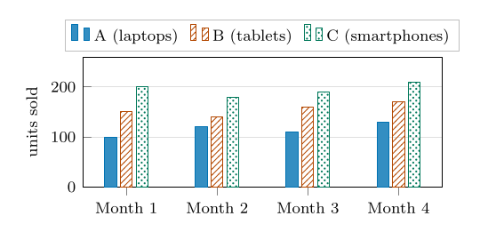
Figure 1.1. The sales matrix S as a bar chart. Each group of bars is one row of S (a month); each bar style is one column (a product). Product C (dotted) is the highest in every month.
Using this matrix, we can answer business questions with simple operations:
Total sales in Month 3: add the third row: 110+160+190=460 units.
Top-selling product overall: add each column. The column sums are 460 (A), 620 (B) and 780 (C), so Product C (smartphones) sells the most: 200+180+190+210=780 units.
Organizing data in matrix form lets us use linear algebra to run complex operations, expose structure, and compute solutions efficiently. Matrices are not only tables of business data. A digital image is also a matrix: one brightness value per pixel (Figure 1.2). Brightening the image multiplies the matrix by a number, and blending two photographs adds two matrices; we define both operations in Section 1.2.
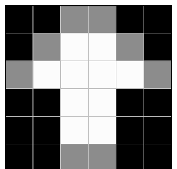
(a) Visual image: a 6×6 grid of square pixels.
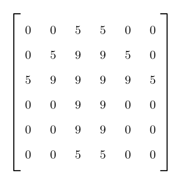
(b) Corresponding matrix stored in memory.
Figure 1.2. A digital image is a grid of pixels, where each pixel square holds a single brightness value (0 = black, 5 = mid-gray edge, 9 = white). The computer stores this grid directly as a matrix.
A matrix is a rectangular array of numbers (or functions) arranged in rows and columns. A matrix with m rows and n columns has (also called dimension or order) m×n, read “m by n”.
Capital letters (A,B,C) denote matrices, and lowercase letters with two subscripts (aij) denote entries. The entry in row i and column j of A is aij. In compact form, A=[aij]m×n.
A matrix with one row is a ; a matrix with one column is a . An m×n matrix A looks like this (Figure 1.3):
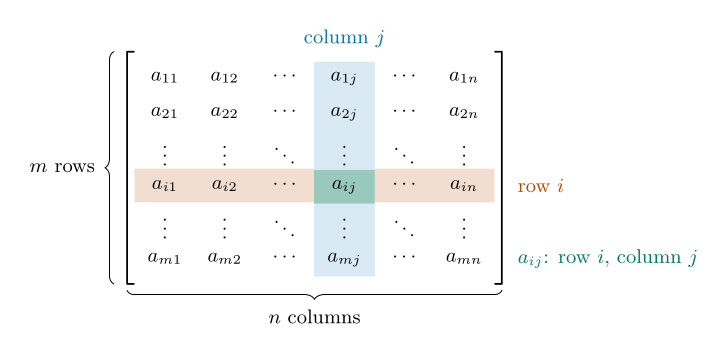
Figure 1.3. Anatomy of an m×n matrix. Row i (shaded orange) and column j (shaded blue) cross at the single entry aij (shaded green).
The entry aij lies at the intersection of the i-th row and the j-th column.
The i-th row is the row matrix [ai1ai2⋯ain].
The j-th column is the column matrix [a1ja2j⋯amj]T (the symbol T is explained in Section 1.2.3).
ExampleMatrix Notation
Consider the 2×3 matrix A: A=[10−3452] Here a12=−3 and a23=2. There is no entry a32, because A has only two rows.
Common Mistake
Two matrices that contain the same numbers are not equal if their sizes differ. The row [123] is 1×3, the column [123]T is 3×1, and they are different objects.
Conceptual Questions
A matrix has 12 entries. List every possible size it could have.
In the sales matrix S, what does the entry s23 mean, and what is its value?
Unlike real numbers, matrices can be added, subtracted and multiplied only when their sizes fit together. Division is not defined directly; the matrix inverse plays its role (Chapter 2).
Two matrices A=[aij]m×n and B=[bij]p×q are (A=B) if and only if they have the same size (m=p and n=q) and aij=bij for all i,j.
The A+B and A−B are defined entry by entry, and only for matrices of the same size: A±B=[aij±bij]m×n.
ExampleAddition and Subtraction
Given A=[1324] and B=[5768]: A+B=[1+53+72+64+8]=[610812],A−B=[−4−4−4−4]. If A and B were the sales matrices of two shops, A+B would be their combined sales.
Common Mistake
A 2×3 matrix and a 3×2 matrix cannot be added, even though they contain the same number of entries. Always compare sizes first.
Let A=[aij]m×n be a matrix and k∈R a scalar. The kA multiplies every entry of A by k: kA=[k⋅aij]m×n. An expression such as kA+lB is called a of A and B.
ExampleA Linear Combination
Let A and B be as in the addition and subtraction example, 3A−2B=[39612]−[10141216]=[−7−5−6−4].
Intuition
Let A and B be the matrices of two images like the one in Figure 1.2. Then 2A is the same picture with doubled brightness values (anything brighter than white is clipped to white), and 21A+21B is a 50 % blend of the two pictures.
Matrix multiplication is a tool for combining two connected processes into a single direct operation, where the output categories of the first stage match the input categories of the second. We do not define matrix multiplication entry by entry (grid cell by grid cell). That operation exists, but it multiplies numbers in matching positions and leaves them completely isolated: it does not mix information across stages or combine separate contributions into a single total. Instead, matrix multiplication uses a “row-by-column” rule—multiplying matching pairs across a row and a column and adding them together—to collapse the shared middle link and calculate how initial inputs directly produce final outputs.
Definition
Let A be an m×n matrix and B an n×p matrix. The product C=AB is the m×p matrix whose entry cik is the dot product of the i-th row of A with the k-th column of B: cik=j=1∑naijbjk=ai1b1k+ai2b2k+⋯+ainbnk.AB is defined if and only if the number of columns of A equals the number of rows of B.
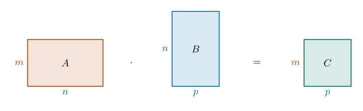
Figure 1.4. Size bookkeeping for C=AB. The two inner sizes (n, in green) must agree; the outer sizes m and p give the size of the product. Note that the width of A equals the height of B.
Intuition
Why is multiplication defined in such a strange way? Suppose the shop from Section 1.1 charges $900 for a laptop, $500 for a tablet and $700 for a smartphone. The revenue in Month 1 is 100⋅900+150⋅500+200⋅700=305,000. This is a “row times column” sum. Doing it for all four months at once gives Sp=100120110130150140160170200180190210900500700=305,000304,000312,000349,000. Matrix multiplication is exactly the bookkeeping for “combine many quantities with many weights”.
VisualizationRow-by-Column Multiplication
To compute c11 for A=[1324] and B=[5768], multiply the first row of A by the first column of B: c11=(1×5)+(2×7)=5+14=19. Computing all entries yields AB=[1⋅5+2⋅73⋅5+4⋅71⋅6+2⋅83⋅6+4⋅8]=[19432250].
Another way to read a product
Figure 1.5 shows Falk’s scheme for matrix multiplication. It places the matrices A (m×n), B (n×p), and C=AB (m×p) on a grid, highlights the second row of A and the second column of B, and shows how the sum of the products of corresponding elements produces the entry c22. Blue projection lines connect the relevant row and column to C, while red arrows indicate the individual products and their sum.
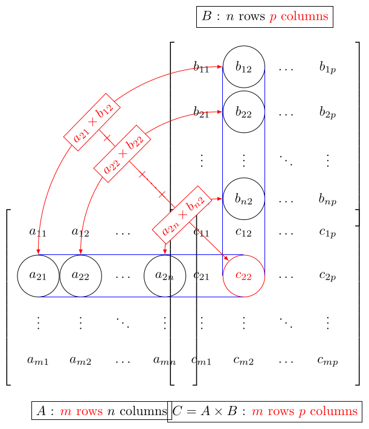
Figure 1.5. Falk’s scheme. Put A to the left and B above the product. Every entry of C=AB sits at the crossing of one row of A and one column of B.
Before we look at how matrices transform space, it helps to clarify what a is.
Algebraically, a vector is simply a specialized, single-column matrix (an n×1 matrix). While a general matrix is a two-dimensional grid of numbers, a column vector like x=[xy] is a one-dimensional list of numerical components.
Geometrically, a vector is represented by a directed line segment (an arrow). Crucially, a vector describes a displacement—an instruction to move x units horizontally and y units vertically:
Free Vectors: The initial point (tail) of the arrow can be placed anywhere in the plane. As long as two directed segments have the same length and point in the same direction, they represent the exact same vector.
Standard Position: To connect geometry with algebra, we usually place the tail at the origin(0,0). When rooted at the origin, the head of the vector points directly to the point (x,y), making the matrix entries [xy] double as coordinates.
Connecting Geometry and Algebra: These perspectives are two sides of the same coin:
The directed line segment gives us spatial intuition (length and direction, independent of location).
The column matrix gives us a precise numerical address to calculate with.
In short, a vector is a directed displacement represented as a single column of numbers, whereas a matrix is a full grid of numbers that acts as a transformation machine. When a 2×2 matrix A multiplies a vector x, it takes the input vector and transforms it into a new output vector Ax.
A 2×2 matrix A=[abcd] is a transformation machine that takes any vector x=[xy] in the plane and outputs a new vector Ax. By expressing x in terms of the standard basis vectors i=(1,0) and j=(0,1), we see how matrix multiplication is just a linear combination: Ax=A(xi+yj)=x(Ai)+y(Aj)=x[ab]+y[cd]. This means the entire transformation is completely determined by where A sends i and j: Ai=first column of A,Aj=second column of A. Linear transformations keep the origin (0,0) fixed and, when A is invertible, keep grid lines parallel and evenly spaced (a singular matrix collapses the plane onto a line or a point; see panel (d) of the figure below). The original unit square bounded by i and j transforms into the parallelogram spanned by Ai and Aj, which is flat if A is singular. Figure 1.6 shows what four fundamental 2×2 matrices do to the unit square.
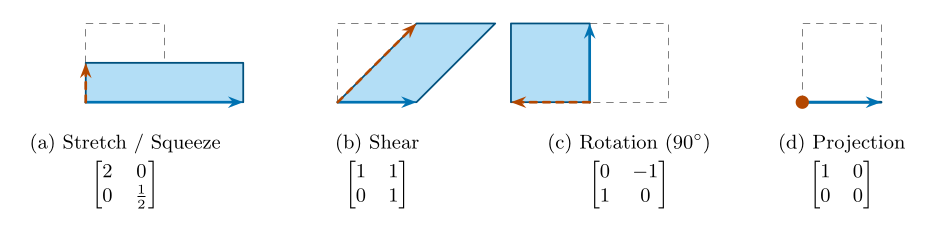
Figure 1.6. Four 2×2 matrices acting on the unit square (grey dashed outline). The solid blue arrow is the transformed basis vector Ai (first column); the dashed orange arrow is Aj (second column). (a) Stretch: scales the x-axis by 2 and squeezes the y-axis by 21 (area is preserved since detA=1). (b) Shear: keeps i fixed while slanting j to (1,1), sliding horizontal lines proportionally to their height. (c) Rotation: turns the plane 90∘ counterclockwise (i→(0,1) and j→(−1,0)). (d) Projection: collapses the 2D plane onto the 1D x-axis; because j maps to (0,0) (orange dot), the matrix has determinant 0, meaning information is destroyed and the action cannot be inverted.
A (or null matrix), denoted O (or simply 0), is a matrix of any size m×n where every entry is equal to zero. A is a matrix that has an equal number of rows and columns (m=n). An n×n square matrix is said to be of order n.
The is defined as δij={1,0,if i=j,if i=j,i,j∈{1,2,…,n}. Using the Kronecker delta, the , denoted In, is the n×n matrix whose (i,j)-entry equals δij: In=δ11δ21⋮δn1δ12δ22⋮δn2⋯⋯⋱⋯δ1nδ2n⋮δnn=10⋮001⋮0⋯⋯⋱⋯00⋮1.
To deeply understand matrix algebra, it is helpful to compare it to the arithmetic of real numbers (R). While many properties carry over, matrices introduce critical differences—namely the lack of commutativity and the existence of zero divisors.
In the realm of matrices, the real numbers 0 and 1 are replaced by the Zero Matrix (O) and the Identity Matrix (I), respectively.
Table 1.1. Comparison of Real Number and Matrix Algebra Properties
Identities:A+O=A, and ImA=AIn=A for an m×n matrix A.
Transpose of a product:(AB)T=BTAT (the order reverses).
Non-commutativity: in general AB=BA.
For a square matrix we write Ak=AA⋯A (k factors) and A0=I.
Remark
Critical differences from scalar algebra. Each “rule” below is true for numbers and false for matrices.
Zero divisors:AB=O does not imply A=O or B=O.
For instance, with A=[0010] and B=[1000] we get AB=O, but BA=[0010]=O.
No cancellation:AB=AC does not imply B=C (unless A is invertible); see Problem 2.
Binomial formula:(A+B)2=A2+AB+BA+B2, which equals A2+2AB+B2only ifAB=BA. Likewise (A+B)(A−B)=A2−AB+BA−B2=A2−B2 in general.
Powers of a product:(AB)2=ABAB is generally different from A2B2=AABB.
Intuition
The product is “do one, then the other”.(AB)x=A(Bx): first apply B, then apply A. So the . Associativity (AB)C=A(BC) then says nothing more than “applying three machines in a row does not depend on how you group them”. Order, however, matters a great deal; see Figure 1.7.
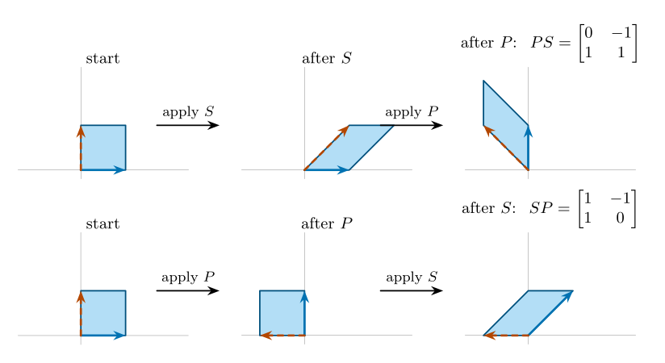
Figure 1.7.PS=SP. Here S=[1011] is a shear and P=[01−10] is a quarter-turn rotation. Top: shear first, then rotate. Bottom: rotate first, then shear. The two final shapes are different (compare where the blue arrow ends), so the two products are different matrices.
Proof of property 6. The (i,k) entry of (AB)T is the (k,i) entry of AB, namely ∑jakjbji. The (i,k) entry of BTAT is ∑j(BT)ij(AT)jk=∑jbjiakj. These sums are equal. □
Conceptual Questions
A is 3×2 and B is 2×4. Is AB defined? Is BA? Give the size of each product that exists.
Why does the formula (AB)T=ATBT fail in general? (Test the sizes with A of size 2×3 and B of size 3×4.)
In Figure 1.7, which of PS and SP sends i to (1,1)?
For a square matrix A=[aij]n×n, the entries a11,a22,…,ann form the . Many matrices that appear in practice have a recognizable pattern of zeros, and that pattern makes calculations faster and reveals physical structure (Figure 1.8).
: aij=0 for all i=j.
: the diagonal matrix with 1s on the main diagonal. For anym×n matrix A we have ImA=AIn=A.
: aij=0 for all i>j (everything below the main diagonal is zero).
: aij=0 for all i<j (everything above the main diagonal is zero).
: AT=A, that is, aij=aji (a mirror image across the diagonal).
: AT=−A, that is, aij=−aji. This forces aii=0.
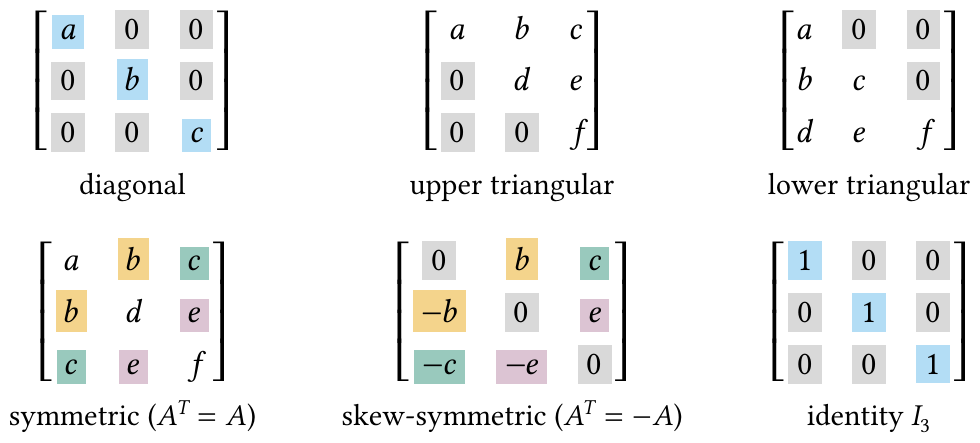
Figure 1.8. Zero patterns of special 3×3 matrices. Grey cells are forced zeros; in the diagonal and identity matrices the blue cells mark the main diagonal. In the symmetric and skew-symmetric matrices, entries with the same color mirror each other across the diagonal (equal in the symmetric case, opposite in sign in the skew case).
Conceptual Questions
Is a matrix that is both upper and lower triangular necessarily diagonal?
Why must the diagonal of a skew-symmetric matrix be zero?
Theorem 1.1Symmetric plus skew-symmetric
Every square matrix A can be written in exactly one way as the sum of a symmetric and a skew-symmetric matrix: A=symmetric21(A+AT)+skew-symmetric21(A−AT).
Three facts are used constantly. The first follows from the transpose rules of Section 1.3.1; the other two follow directly from the definition of the product:
For any matrix A (even a non-square one), ATA is symmetric, because (ATA)T=AT(AT)T=ATA.
Powers of a diagonal matrix are computed entry by entry: diag(d1,…,dn)k=diag(d1k,…,dnk).
The product of two upper (or two lower) triangular matrices is again upper (lower) triangular.
Matrix algebra is the universal working language across science, engineering, and modern computing. Beyond physical engineering—such as analyzing structural frameworks, electrical circuits, mechanical vibrations, and robotic kinematics—matrices drive digital imagery, economic modeling, quantum physics, and artificial intelligence. Regardless of the discipline, the governing recipe remains the same:
Formulate Local Laws: Write down the fundamental physical or mathematical relationship governing each individual component—be it Kirchhoff’s laws at a circuit node, Newton’s second law for a mass in a vibrating system, or pixel transformations in computer graphics.
Assemble the Global System: Collect all these local equations into a single, unified matrix equation, typically of the form Ax=b or xk+1=Axk.
Deploy Matrix Algebra: Let the structural tools of linear algebra—determinants, matrix inverses, eigenvalues, and decompositions—solve, transform, and analyze the entire interconnected system at once.
A is a structure of straight bars joined at pins. Every bar carries a force only along its own axis: (pulling on the joints, positive) or (pushing, negative).
Physics & Engineering
Physical law. A joint at rest has no net force: ∑Fx=0 and ∑Fy=0.
For the triangular truss of Figure 1.9, let f1,f2,f3 be the bar forces (tension >0) and P the downward load at joint 2. The roller at joint 3 cannot push horizontally. Joint 2 gives two equations and the horizontal balance at joint 3 gives a third: −f1cosθ1+f2cosθ2−f1sinθ1−f2sinθ2−P−f2cosθ2−f3=0=0=0(joint 2, horizontal)(joint 2, vertical)(joint 3, horizontal) In matrix form Ef=p: E(equilibrium matrix)−cosθ1−sinθ10cosθ2sinθ2cosθ2001f1f2f3=0−P0.
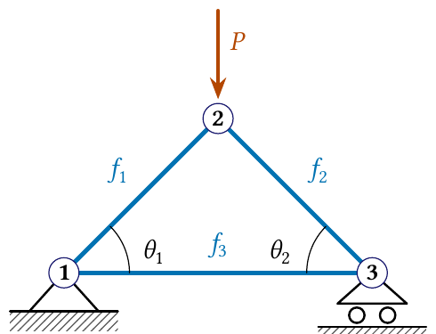
(a) Pin at joint 1, roller at joint 3, load P at joint 2.
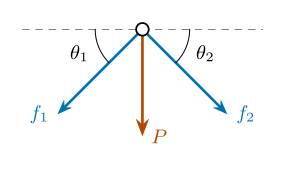
(b) Forces on the pin at joint 2 (bars drawn in tension).
Figure 1.9. A triangular truss and the free-body diagram of its top joint. The bar forces are drawn as if the bars were in tension; all three arrows at joint 2 point downwards, so the vertical balance can only hold if f1 and f2 come out negative, that is, if the two upper bars are in compression.
ExampleA Symmetric Truss
Take θ1=θ2=θ=45∘ (Figure 1.10), so cosθ=sinθ=21. The first equation gives f1=f2. The second gives 2sinθf1=−P, so f1=f2f3=−2sinθP=−2P≈−0.71P(compression),=−cosθf2=2P(tension). The support reactions are P/2 each (by symmetry and the vertical balance of joint 3: R3=−f2sinθ=P/2).
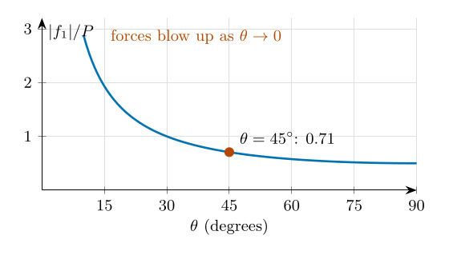
Figure 1.10. Force in each upper bar of the symmetric truss, ∣f1∣/P=1/(2sinθ). A flat truss (small θ) must carry enormous forces.
Intuition
Why do flat trusses and shallow cables fail so easily? The determinant of E equals −sin(θ1+θ2), and for the symmetric truss θ1=θ2=θ it is −sin2θ. As θ→0 this tends to 0: the matrix becomes (nearly) singular, and the solution of Ef=p blows up, exactly as in Figure 1.10. (Determinants and singular matrices are treated in the following chapters; here it is enough to know that “determinant close to 0” means “small changes in the data cause huge changes in the answer”.)
Common Mistake
The relation F=kx (Hooke’s law) is not the equilibrium equation of a truss joint. Equilibrium involves only forces and angles, and it gives Ef=p. Hooke’s law enters later, when we ask how far the joints move; see Section 1.5.3.
Two laws.Ohm’s law: the voltage drop across a resistor is V=RI. Kirchhoff’s voltage law (KVL): going once around any closed loop, the voltages that push the current equal the voltage drops.
In the we let a current Ik circulate (say clockwise) around each mesh, apply KVL to each mesh, and obtain one linear equation per mesh. For three meshes in a row, with a source V1 in the first and V2 in the last, R11−R120−R12R22−R230−R23R33I1I2I3=V10−V2. Here Rkk is the total resistance around mesh k, and Rjk=Rkj is the resistance shared by meshes j and k. It appears with a minus sign because, with all currents clockwise, neighboring currents run in opposite directions through the shared resistor. A source enters the right-hand side with + if it pushes the current in the clockwise direction and with − if it opposes it.
ExampleTwo Meshes
KVL around mesh 1 gives V1=R1I1+R3(I1−I2), and around mesh 2 gives −V2=R2I2+R3(I2−I1), see Figure 1.11. In matrix form [R1+R3−R3−R3R2+R3][I1I2]=[V1−V2]. For R1=R2=1Ω, R3=2Ω, V1=10V, V2=5V: [3−2−23][I1I2]=[10−5]⟹I1=4A,I2=1A. (From the first equation I1=(10+2I2)/3; substituting into the second gives 35I2=35.)
The current through R3 is I1−I2=3A, downward. Check with the outer loop: V1−V2=5=R1I1+R2I2=4+1.✓
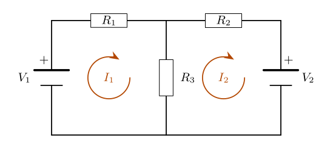
Figure 1.11. A two-mesh circuit. Both mesh currents I1,I2 are chosen clockwise. In the shared resistor R3 the current flows downward for I1 and upward for I2, so the net current is I1−I2. The longer plate of each battery is its + terminal: V1 pushes the current clockwise, whereas V2 pushes against I2.
Physical law. Hooke’s law: a spring of stiffness k stretched by Δ pulls back with force kΔ. Let two masses on a frictionless line be joined to each other and to two walls by springs k1,k2,k3 (Figure 1.12), pushed by external forces F1,F2 so that they move by x1,x2. The middle spring stretches by x2−x1. In equilibrium each mass has zero net force: −k1x1+k2(x2−x1)+F1−k2(x2−x1)−k3x2+F2=0,=0, that is, Kx=F with the [k1+k2−k2−k2k2+k3][x1x2]=[F1F2].
Intuition
The stiffness matrix K is symmetric: the external force needed at mass 1 per unit displacement of mass 2 equals the external force needed at mass 2 per unit displacement of mass 1 (both equal −k2). It is also tridiagonal: only neighboring masses are connected by a spring, so all other entries are zero. Real structures meshed into thousands of nodes (finite elements) have the same structure, which computers exploit. When the masses move in time, Newton’s law reads Mx¨+Kx=F(t) with M=diag(m1,m2).
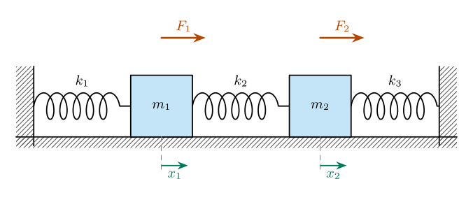
Figure 1.12. Two masses and three springs between two fixed walls. F1,F2 are applied forces; x1,x2 are the displacements from the rest positions (dashed guides).
ExampleThree Equal Springs
Let k1=k2=k3=k, F1=0 and F2=F. Then k[2−1−12][x1x2]=[0F]. The first row gives x2=2x1; the second then gives 3kx1=F. Hence x1=3kF and x2=3k2F. For k=100N/m and F=30N: x1=0.1m and x2=0.2m.
Rotating the plane counterclockwise by the angle θ about the origin is the transformation R(θ)=[cosθsinθ−sinθcosθ]. Its columns are the images of i and j (Figure 1.13a). Two key facts:
Composition:R(θ)R(φ)=R(θ+φ). Turning by φ and then by θ is turning by θ+φ. (Multiplying out the matrices gives the angle-addition formulas of trigonometry; see Conceptual Problem 10.)
Matrices with QTQ=I are called ; they describe rigid motions that do not stretch anything.
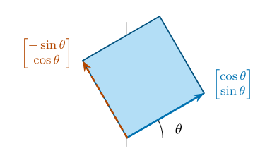
(a) R(θ) for θ=30∘.
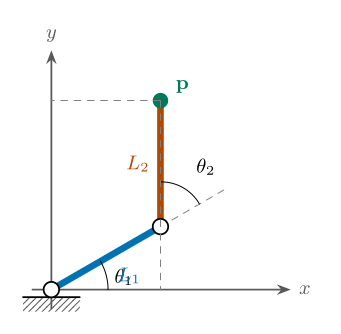
(b) A two-link arm (L1=L2=1 drawn at scale 2).
Figure 1.13. (a) Rotation by θ: the first column of R(θ) (blue) is the new position of i, the second (orange, dashed) the new position of j. (b) A planar robot arm with joint angles θ1 (measured from the x-axis) and θ2 (measured from the extension of link 1).
ExampleWhere Is the Gripper?
Link 1 points at angle θ1 and link 2 points at angle θ1+θ2. Using R(θ1)R(θ2)=R(θ1+θ2), the tip p is p=R(θ1)([L10]+R(θ2)[L20])=[L1cosθ1+L2cos(θ1+θ2)L1sinθ1+L2sin(θ1+θ2)]. For L1=L2=1, θ1=30∘, θ2=60∘: p=(cos30∘+cos90∘,sin30∘+sin90∘)=(23,23).
Given A=[1021], compute A2,A3, and deduce a general formula for An, n∈N.
Solution.A2=[1021][1021]=[1041],A3=A2A=[1041][1021]=[1061]. The pattern suggests An=[102n1]. Proof by induction. For n=1 this is A. If it holds for n, then An+1=AnA=[102n1][1021]=[102n+21]=[102(n+1)1].□Geometric meaning.A is a shear: it slides the top edge of the unit square two units to the right. Applying it n times slides it 2n units (Figure 1.14).
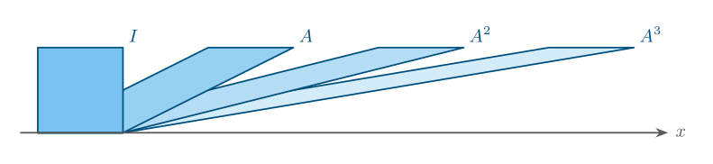
Figure 1.14. The unit square and its images under I, A, A2, A3 for A=[1021]. Each application of A shifts the top edge two more units to the right, matching An=[102n1].
Problem 2Failure of Cancellation
Find a nonzero matrix A and two different matrices B=C such that AB=AC.
Solution. Let A=[1000], B=[1324] and C=[1526]. Then AB=[1000][1324]=[1020]=[1000][1526]=AC, although B=C. Why it happens:Ax=(x1,0) discards the second coordinate (it is the projection of Figure 1.6d), so it cannot “see” that the second rows of B and C differ. Equivalently A(B−C)=O with B−C=O.
Problem 3Order Matters
For A=[1011] and B=[1101] compute AB and BA.
Solution.AB=[1⋅1+1⋅10⋅1+1⋅11⋅0+1⋅10⋅0+1⋅1]=[2111],BA=[1112]. So AB=BA, even though both matrices are 2×2 with entries 0 and 1. Geometrically, A shears to the right and B shears upward, and the two shears do not undo or exchange each other.
Problem 4Symmetric and Skew-Symmetric Parts
Decompose A=[1423] as A=S+K with ST=S and KT=−K.
Solution. By Theorem 1.1, S=21(A+AT) and K=21(A−AT). Here AT=[1243], so S=21[2666]=[1333],K=21[02−20]=[01−10]. Indeed S+K=A, ST=S and KT=−K.
Problem 5AAT versus ATA
For A=[142536] compute AAT and ATA. What are their sizes? What do they have in common?
Solution.A is 2×3, so AAT is 2×2 and ATA is 3×3: AAT=[14323277],ATA=172227222936273645. Both are symmetric (Section 1.4) and both have trace 91: 14+77=17+29+45. This is no accident: tr(AAT)=tr(ATA) by Conceptual Problem 4.
Try these before touching a calculator: most can be answered by thinking about sizes, symmetry or geometry.
Commutativity analysis. Find all 2×2 matrices X=[acbd] that commute with A=[1000], that is, XA=AX. What structure must X have?
Symmetric product property. If A and B are symmetric n×n matrices, prove that AB is symmetric if and only ifA and B commute (AB=BA).
Nilpotent matrices. A matrix N is nilpotent if Nk=O for some positive integer k.
Show that [0010] is nilpotent.
Show that N=000100010 satisfies N2=O but N3=O.
Verify (I−N)(I+N+N2)=I. (It is the matrix version of the geometric series 1/(1−x)=1+x+x2+⋯.)
Trace. The trace tr(A) of a square matrix is the sum of its diagonal entries. Prove that tr(AB)=tr(BA) for any m×n matrix A and n×m matrix B. (Note that AB and BA have different sizes!)
True or false? Justify each answer with a proof or a counterexample.
If A and B both have size m×n, then AB is defined.
If AB is defined, then BA is defined.
If A2=O, then A=O.
(A+B)(A−B)=A2−B2 for all square A,B of the same size.
If A is symmetric, then A2 is symmetric.
A diagonal matrix commutes with every square matrix of the same size.
Size detective. Let A be 3×2, B be 2×4 and C be 4×3. Which of AB, BA, ABC, CAB, ACB and (AB)T are defined? Give the size of each one that is.
Geometry of two matrices.
What does P=[0110] do to the point (x,y)? Predict P2 without multiplying, then check.
What does Π=[1000] do to (x,y)? Use your answer to explain, in one sentence, why ΠB=ΠC can hold with B=C.
Spot the error. A student writes (AB)T=ATBT “because transposing is just flipping”. Use a 2×3 matrix A and a 3×4 matrix B to show that this cannot be right, and state the correct rule.
Reading the physics.
In the truss equation Ef=p, why is the third column of E equal to (0,0,1)T?
Why is the mesh-resistance matrix symmetric?
A third mass and a fourth spring k4 are added to the spring chain. Which entries of the new 3×3 stiffness matrix are nonzero?
Rotations compose. Without computing, what must R(θ)R(φ) be? Now multiply the two matrices and compare entries to derive the formulas for cos(θ+φ) and sin(θ+φ).
Given A=[21−13] and B=[0−124], evaluate (A+B)2 and compare it with A2+2AB+B2. Explain why they differ, and find the matrix by which they differ.
A robot joint rotates its coordinate frame by M=[cosθsinθ−sinθcosθ]. Compute M2 and MTM. Interpret both results geometrically: what rotation is M2, and what does MTM=I say about lengths?
For A=[142536] and B=101011 compute AB and BA, and verify tr(AB)=tr(BA).
Truss. For the truss of Figure 1.9 with θ1=30∘, θ2=60∘ and P=10kN, solve Ef=p. State which bars are in tension and which in compression.
Circuit. In the circuit of Figure 1.11 let R1=2Ω, R2=3Ω, R3=6Ω, V1=12V and V2=6V. Write the mesh equations in matrix form and find I1, I2 and the current through R3.
Springs. In Figure 1.12 let k1=k3=2k, k2=k, F1=F and F2=0. Find x1 and x2. Compare with the example in the text and comment on the result.
Robot arm. For L1=2, L2=1, θ1=60∘ and θ2=−30∘, find the tip position p and sketch the arm.
Chapter 2Determinants and Inverses
Learning Objectives
After studying this chapter you should be able to:
explain the determinant as a signed area (or volume) and connect detA=0 with a collapsing transformation;
compute determinants of 2×2 and 3×3 matrices, and of larger matrices by Laplace expansion and by row reduction;
use the properties of the determinant (and know what each row operation does to it);
decide whether a matrix is invertible, and find A−1 by the adjugate and by Gauss–Jordan elimination;
apply determinants to areas and volumes, circuits, structures and geometric transformations.
Let A be a square matrix. The , written det(A) or ∣A∣, is a scalar. Think of A as a transformation of the plane (or of space). It sends the standard basis vectors i,j to the columns of A, so it sends the unit square to the parallelogram spanned by those columns, see Figure 2.1. Then:
∣detA∣ is the (volumes, in 3D);
the sign of detA tells whether the orientation is preserved (+) or flipped like a mirror image (−);
detA=0 means the parallelogram is onto a line (or a point): the transformation destroys information and cannot be undone, so A has no inverse.
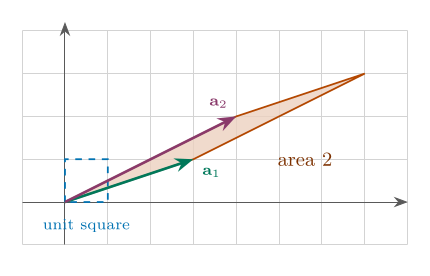
(a) A=[3142], detA=2
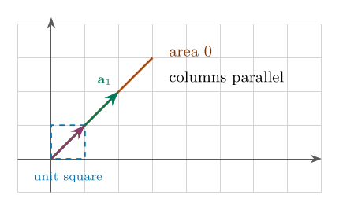
(b) A=[2211], detA=0
Figure 2.1. The unit square (blue, dashed) and its image under A. (a) The columns a1=(3,1) and a2=(4,2) span a parallelogram of area ∣3⋅2−4⋅1∣=2: areas are doubled. (b) The columns (2,2) and (1,1) are parallel, so the whole square is squashed onto a line: area 0, and A cannot be inverted.
Common Mistake
The sign of the determinant. A negative determinant does not mean “negative area”. The area (or volume) is ∣detA∣; the sign only records whether the orientation is preserved or flipped. Also, only square matrices have a determinant.
In three dimensions the columns of a 3×3 matrix span a parallelepiped and ∣detA∣ is its volume, see Figure 2.2.
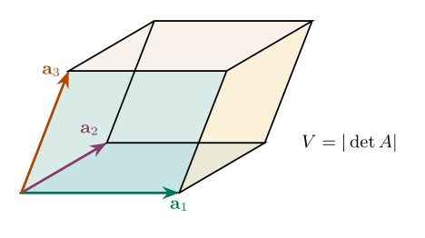
Figure 2.2. The columns a1,a2,a3 of a 3×3 matrix span a parallelepiped whose volume is ∣detA∣. If the three columns lie in one plane, the box is flat, the volume is 0, and the matrix is singular.
For a 1×1 matrix A=[a], the determinant is the number itself: ∣A∣=a. Let A=[acbd]. Its determinant is det(A)=ad−bc(main diagonal minus anti-diagonal). Geometrically, det(A) is the signed area of the parallelogram spanned by the column vectors v1=[ac] and v2=[bd], see Figure 2.3.
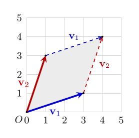
Figure 2.3. The parallelogram spanned by v1=[31] and v2=[13]. The area of this shaded region equals det([v1v2])=∣(3)(3)−(1)(1)∣=8.
What does “spanned” mean? The of two vectors is the set of all possible linear combinations you can build using them: c1v1+c2v2for all real numbers c1,c2.
1. As a Grid/Region: If you start at the origin and walk along v1 and v2, the region bounded between 0, v1, v2, and their sum v1+v2 forms a tilted 2D parallelogram. The determinant measures the exact area of this shape.
2. Dimensionality (Plane vs. Line):
If v1 and v2 point in different directions, their span fills out the entire 2D plane (det(A)=0).
If v1 and v2 lie along the same line (linearly dependent), the parallelogram collapses into a flat line segment with zero area (det(A)=0).
Intuition
Where ad−bc comes from. Draw the parallelogram spanned by (a,c) and (b,d) inside the rectangle of width a+b and height c+d (take a,b,c,d>0 with ad>bc). The rectangle has area (a+b)(c+d)=ac+ad+bc+bd. Cut away the two triangles of area 21ac, the two triangles of area 21bd and the two small rectangles of area bc, a total of ac+bd+2bc. What remains is ad−bc. The formula is not an arbitrary recipe: it is area bookkeeping.
ExampleDeterminant of a 2×2 Matrix
For A=[3142]: det(A)=3⋅2−4⋅1=2 (the area 2 of Figure 2.1a).
Swap the two columns: A′=[4231] has det(A′)=4⋅1−3⋅2=−2. The same parallelogram, but traversed in the opposite orientation: the sign flips.
2.1.3 Determinant of a 3×3 Matrix: Sarrus’ Rule (Basket-Weave)#
For A=[aij] of size 3×3, repeat the first two columns to the right of the matrix. Multiply along the three downward diagonals (positive terms a,b,c) and along the three upward diagonals (negative terms d,e,f):
Sarrus’ rule works only for 3×3 matrices. A 4×4 determinant has 4!=24 terms, not the 8 that a similar “diagonal” scheme would give, so the pattern does not extend. For larger matrices use Laplace expansion or row reduction.
ExampleSarrus' Rule
Compute det(A) for A=147258369.
Downward: 1⋅5⋅9=45, 2⋅6⋅7=84, 3⋅4⋅8=96; sum =225.
Upward: 7⋅5⋅3=105, 8⋅6⋅1=48, 9⋅4⋅2=72; sum =225.
Hence det(A)=225−225=0.
2.1.4 Determinant of an n×n Matrix: Laplace Expansion#
Laplace expansion reduces an n×n determinant to determinants of size n−1, and works for every n.
DefinitionMinor and Cofactor
Let A=[aij] be n×n. The Mij of the entry aij is the determinant of the (n−1)×(n−1) matrix obtained by deleting the i-th row and j-th column of A. The of aij is Cij=(−1)i+jMij.
The factor (−1)i+j gives a checkerboard of signs, starting with + in the upper-left corner:
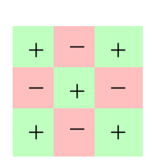
(a) 3×3 signs
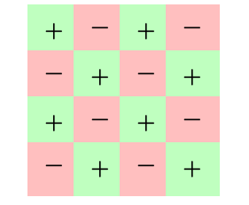
(b) 4×4 signs
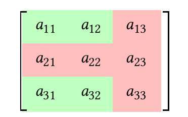
(c) deleting row 2, column 3
Figure 2.4. Left and middle: the sign (−1)i+j attached to each position. Right: to find the minor M23 delete row 2 and column 3 (red); the remaining green entries form the smaller matrix whose determinant is M23.
ExampleMinors and Cofactors
For A=a11a21a31a12a22a32a13a23a33:
C11: delete row 1 and column 1: M11=a22a32a23a33=a22a33−a23a32, and C11=(−1)1+1M11=M11.
C23: delete row 2 and column 3 (Figure 2.4, right): M23=a11a31a12a32=a11a32−a12a31, and C23=(−1)2+3M23=−M23.
Theorem 2.1Laplace expansion
The determinant of an n×n matrix A can be computed by expanding along any row i or any column j: det(A)=ai1Ci1+ai2Ci2+⋯+ainCinordet(A)=a1jC1j+a2jC2j+⋯+anjCnj.
Intuition
Choosing the row or column. Terms with aij=0 vanish, so expand along the row or column with the most zeros: it saves the most minors. Expanding along row 1 of a 3×3 matrix gives det(A)=a11a22a32a23a33−a12a21a31a23a33+a13a21a31a22a32.
Intuition
Why the signs form a checkerboard. The determinant is linear in each row, so row i=(ai1,…,ain) can be split as ai1e1+⋯+ainen and each piece treated separately. The piece with the single entry aij can be moved to the top-left corner using i−1 row swaps and j−1 column swaps; every swap flips the sign (Property 1), giving (−1)i+j−2=(−1)i+j. What is left is the minor. So the checkerboard is just bookkeeping of orientation flips.
Common Mistake
Cofactor expansion.
The sign (−1)i+j belongs to the position, not to the number sitting there. For a12=−3 the term is a12C12=(−3)(−M12)=+3M12.
A minor is not a cofactor: forgetting (−1)i+j is the most frequent source of wrong answers.
Use the entries of one row (or column) with the cofactors of that same row (column). Entries of row i with cofactors of a different row give 0, which can hide a mistake.
ExampleExpansion Along the First Row
For A=147258369: det(A)=15869−24769+34758=1(−3)−2(−6)+3(−3)=0, in agreement with Sarrus’ rule.
ExampleA 4×4 Determinant
Find det(A) for A=1372258100034693. Column 3 contains three zeros, so expand along it:
det(A)=a43C43=3C43 with C43=(−1)4+3M43=−M43, where M43=137258469=1(45−48)−2(27−42)+4(24−35)=−3+30−44=−17. So C43=17 and det(A)=3⋅17=51.
Intuition
Alien cofactors: why the adjugate formula works. If you multiply the entries of row i by the cofactors of a different row k=i, the sum is always 0: ai1Ck1+ai2Ck2+⋯+ainCkn=0(i=k). (It is the expansion of a determinant that has two equal rows.) Together with Laplace expansion (i=k gives detA) this says A⋅[Ckj]T=det(A)I, the key to the inverse formula in Section 2.3.2.
Expanding recursively produces n! products, which explodes. Row reduction (Section 2.2) needs only about 31n3 multiplications.
Table 2.1. Cost of computing a determinant. Cofactor expansion is perfect for small matrices or matrices with many zeros, hopeless for large ones; software always uses row reduction (LU decomposition).
We write Ri for the i-th row and Cj for the j-th column. The three are
Ri↔RjRi→kRiRi→Ri+kRjswap rows i and j,multiply row i by k=0,add k times row j to row i(i=j).
Swap. Interchanging two rows (or two columns) changes the sign of the determinant: det↦−det.
Scaling. Multiplying one row (or column) by k multiplies the determinant by k: det↦kdet.
Replacement. Adding a multiple of one row (column) to another row (column) does not change the determinant.
Linearity in a row. If row i is a sum r+s, then the determinant is the sum of the two determinants with row i replaced by r and by s (other rows unchanged). But det(A+B)=detA+detB in general.
Zero row or column. If a row or a column is zero, then det=0.
Equal or proportional rows. If two rows (or columns) are identical, or one is a multiple of another, then det=0.
Triangular matrices. For an upper or lower triangular matrix the determinant is the product of the diagonal entries: deta1100⋮0∗a220⋮0∗∗a33⋮0⋯⋯⋯⋱⋯∗∗∗⋮ann=a11a22⋯ann.
Transpose.det(AT)=det(A). (So every statement about rows is also true for columns.)
Multiplicativity.det(AB)=det(A)det(B).
Scalar multiple. For an n×n matrix A: det(kA)=kndet(A).
Table 2.2. Effect of row operations on the determinant (Properties 1–3).
Row operation
Effect on det
Geometric meaning
Ri↔Rj
×(−1)
orientation reversed (mirror image)
Ri→kRi
×k
one side of the parallelogram stretched by k
Ri→Ri+kRj
×1
a shear: base and height unchanged, so area unchanged
Common Mistake
Row operations.
Only Ri→Ri+kRj leaves det unchanged. The operation Ri→kRi+Rj replaces row i by a multiple of itself, so it multipliesdet by k.
When you scale a row to simplify, compensate: if you divide a row by k to get smaller numbers, the original determinant is k times the new one.
Count every swap. Two swaps cancel, three do not.
For solving systems you may scale rows freely; for determinants you must keep a record of every scaling and swap.
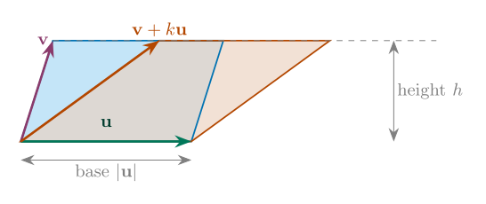
Figure 2.5. Replacement R2→R2+kR1 in rows-as-sides language: replacing v by v+ku slides the top edge of the parallelogram sideways. Base and height are unchanged, so the area (the determinant) is unchanged.
ExampleReduction to Triangular Form
Compute det(A) for A=2461−2132−1 using only replacements (Property 3), which do not change the determinant.
The matrix is upper triangular (Property 7), so det(A)=(2)(−4)(−8)=64.
Intuition
Elimination reshapes the parallelepiped. A replacement is a shear (Figure 2.5): it slides the shape sideways without changing base or height, so the volume is unchanged. A sequence of shears straightens a parallelepiped into a rectangular box whose sides are the diagonal entries; its volume is their product. Swaps flip the orientation (a sign) and scalings stretch one side (a factor). That is the whole algorithm for computing a determinant by elimination.
Intuition
Why det(AB)=detAdetB and det(kA)=kndetA.AB means “first transform by B, then by A”. B multiplies areas by detB and then A multiplies the result by detA, so the overall factor is the product. For kA each of the n sides of the box is stretched by k: doubling every side of a cube multiplies its volume by 23=8, not by 2.
Common Mistake
The determinant is not additive.det(A+B)=detA+detB and det(kA)=kdetA. The determinant is linear in one row at a time, not in the whole matrix. For A=B=I2: det(A+B)=4 but detA+detB=2.
ExampleWhen a Swap Is Needed
A zero in the pivot position forces a row swap, and every swap flips the sign.
Let A=012211103.
R1↔R2 gives 102121013 (one swap, so det is multiplied by −1); R3→R3−2R1 gives 10012−1013; R3→R3+21R2 gives 1001200127.
The triangular determinant is 1⋅2⋅27=7, so det(A)=−7. (Check by expanding along row 1: 0−2(3−0)+1(1−2)=−7.)
ExampleMultiplicativity and det(kA)
For A=[1324] (det=−2) and B=[0111] (det=−1): AB=[2437] and det(AB)=14−12=2=(−2)(−1). Also det(3A)=39612=36−54=−18=32⋅(−2), not 3⋅(−2).
The sum rule fails: det(A+B)=1435=−7=−2+(−1).
An n×n matrix A is (or ) if there is an n×n matrix B such that AB=BA=In, where In is the identity matrix. Then B is unique and is called the of A, written A−1. A matrix with no inverse is .
Theorem 2.2Invertibility criteria
For an n×n matrix A the following statements are equivalent:
A is invertible;
det(A)=0;
Ax=0 has only the solution x=0;
Ax=b has exactly one solution for every b;
A can be reduced to the identity matrix by row operations.
Intuition
Invertible means “nothing is lost”. A singular matrix squashes space, so different inputs land on the same output. The projection [1000] sends both (1,2) and (1,5) to (1,0); given only the output (1,0), no inverse can tell which input it came from. An invertible matrix never merges points, so every output has exactly one input. This one picture explains all five criteria: a nonzero x with Ax=0 (the inputs that get squashed to 0), no unique solution, no reduction to I, and detA=0.
AnalogyMultiplicative Inverse of Real Numbers
Just as the multiplicative inverse of a non-zero real number a is a−1=1/a where a⋅a−1=1, the inverse of a square matrix A is A−1 where A⋅A−1=In.
In real numbers, you cannot divide by zero (0 has no inverse). In linear algebra, a matrix with det(A)=0 similarly has no inverse.
Common Mistake
Judging singularity by the size of detA. Only detA=0exactly means singular. A small determinant proves nothing: changing units changes it. The same 2×2 stiffness matrix has a determinant 106 times larger in N/m than in N/mm. How close a matrix is to being singular is measured by its condition number, not by the determinant (see Section 2.5).
For A=[acbd] with det(A)=ad−bc=0, A−1=ad−bc1[d−c−ba]. Memory aid: swap the diagonal entries, negate the off-diagonal entries, divide by the determinant. Since det(A−1)=detA1, a transformation that doubles areas is undone by one that halves them.
ExampleInverse of a 2×2 Matrix
Find the inverse of A=[4231].
det(A)=4⋅1−3⋅2=−2=0, so A is invertible and A−1=−21[1−2−34]=[−21123−2].
The (or classical adjoint) of A is the transpose of the cofactor matrix C=[Cij]: adj(A)=CT,Cij=(−1)i+jMij. By Laplace expansion and the alien-cofactor rule, Aadj(A)=det(A)I, hence
Theorem 2.3Adjugate formula
If det(A)=0 then A−1=det(A)1adj(A).
ExampleInverse of a 3×3 Matrix by the Adjugate
Compute A−1 for A=101240356.
1. Determinant (expand along row 2, which has a zero): det(A)=4(−1)2+21136+5(−1)2+31120=4(6−3)−5(0−2)=12+10=22=0.2. Cofactors:C11C21C31=+4056=24,=−2036=−12,=+2435=−2,C12C22C32=−0156=5,=+1136=3,=−1035=−5,C13C23C33=+0140=−4,=−1120=2,=+1024=4.3. Adjugate (transpose of the cofactor matrix): C=24−12−253−5−424,adj(A)=CT=245−4−1232−2−54.4. Inverse:A−1=221245−4−1232−2−54=1112225−112−116223111−111−225112.
Common Mistake
The adjugate.
The adjugate is the transpose of the cofactor matrix. Forgetting the transpose gives (A−1)T instead of A−1.
Write the checkerboard of signs first (Figure 2.4); one wrong sign, for example in C13, ruins a whole row or column of the answer.
Always verify with Aadj(A)=det(A)I: an entry that comes out wrong points to the offending row of A and column of adj(A).
The formula is exact and elegant, but needs n2 determinants of size n−1; for numerical work use Gauss–Jordan or an LU decomposition.
Write A and the identity side by side, [A∣I], and apply row operations until the left block becomes I. The same operations turn the right block into A−1: [A∣I]row operations[I∣A−1]. If the left block cannot be reduced to I (a zero row appears), A is singular.
ExampleGauss–Jordan
Find the inverse of A=101110011
(detA=2) by Gauss–Jordan elimination on [A∣I].
Why Gauss–Jordan finds the inverse. Each row operation is multiplication on the left by an elementary matrix E. If operations E1,…,Ek turn A into I, then Ek⋯E1A=I, so Ek⋯E1=A−1. Applying the very same operations to I gives Ek⋯E1I=A−1: the right half of [A∣I] is a running record of everything we did to A.
A has the form AX+B=C, with A an n×n matrix, X the unknown n×p matrix, and B,C given n×p matrices. If A is invertible, subtract B and multiply from the left by A−1: AX=C−B⟹X=A−1(C−B), and the solution is unique. For XA+B=C multiply from the right: X=(C−B)A−1. Matrix multiplication is not commutative, so A−1(C−B) and (C−B)A−1 are generally different.
Common Mistake
Order of multiplication. In AX=D multiply both sides by A−1on the left: X=A−1D. Writing X=DA−1 is wrong in general (it solves XA=D). Do not cancel A from the middle of a product, and check that B and C in AX+B=C have the same size as AX.
2.4 Determinants and Inverses in Physics and Engineering#
Physics & Engineering
Whenever several quantities are coupled linearly (forces in a structure, currents in a network, coordinates in a robot arm) the model is a matrix equation, and the determinant decides whether the problem is well posed. This section collects the most important uses.
Messages can be encrypted by multiplying blocks of letters (A=0,…,Z=25) by a key matrix modulo 26. Decryption needs the inverse of the key matrix modulo 26, which exists only if detK has no common factor with 26. For K=[3235]: detK=9 and gcd(9,26)=1, so K is a valid key, and K−1≡[1520179](mod26). The word HI =(7,8) is encrypted to K(7,8)T=(45,54)≡(19,2)= TC, and K−1(19,2)T=(319,398)≡(7,8) recovers it.
Rotations, scalings, reflections and shears of the plane are all given by 2×2 matrices, and their determinants describe what they do to area and orientation (Figure 2.6 and Table 2.3).
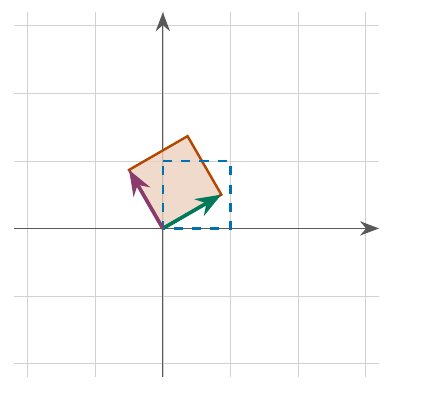
(a) rotation 30∘: det=1
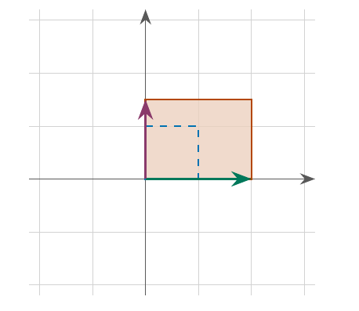
(b) scaling 2×1.5: det=3
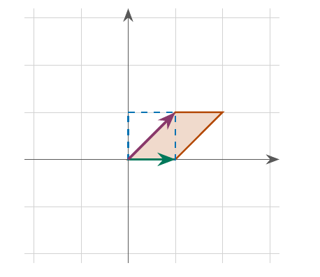
(c) shear: det=1
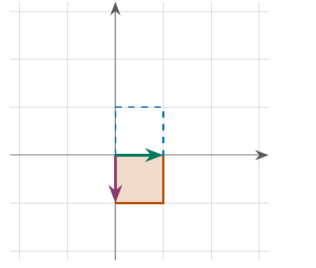
(d) reflection: det=−1
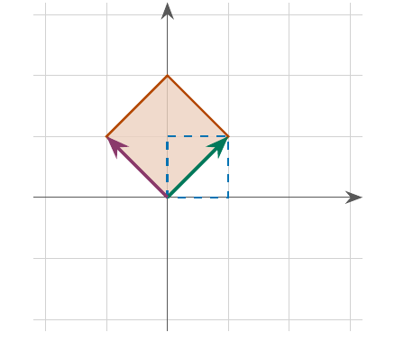
(e) rotate 45∘ and scale 2: det=2
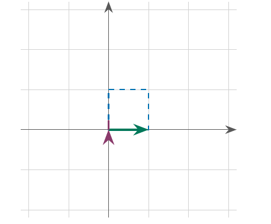
(f) projection: det=0
Figure 2.6. The unit square (blue, dashed) and its image (red) under six transformations; the green and purple arrows are the images of e1 and e2, i.e. the columns of the matrix. Rotations and shears preserve area, scalings multiply it, a reflection flips orientation (negative determinant), and a projection flattens the square to a segment (determinant zero, not invertible).
Table 2.3. Basic plane transformations. For a composition the determinants multiply (Property 9): rotating (det 1), scaling by 2×1.5 (det 3), then reflecting (det −1) gives a map with determinant −3: areas triple and the orientation flips.
Transformation
Matrix
det
Inverse
rotation by θ
[cosθsinθ−sinθcosθ]
1
rotation by −θ; R−1=RT
scaling
[sx00sy]
sxsy
scaling by 1/sx,1/sy
shear
[10m1]
1
shear by −m
reflection in the x-axis
[100−1]
−1
itself
projection onto the x-axis
[1000]
0
none
Physics & Engineering
A rotation matrix R of the plane or of space is orthogonal (RTR=I) with detR=+1 (a proper rotation, a right-handed frame stays right-handed). Hence R−1=RT: the inverse of a rotation is found by transposing, with no determinant or elimination needed. For the 90∘ rotation R=[01−10], R−1=RT=[0−110]. A matrix with det=−1 includes a reflection, and would turn a right-handed coordinate system into a left-handed one. In continuum mechanics the determinant of the deformation gradient is the ratio of deformed to original volume: detF=1 for an incompressible material.
Kirchhoff’s voltage law around each loop of a resistor network gives a linear system RI=V, with the resistance matrix R and the source voltages V. A unique set of currents exists exactly when detR=0 (which is always true for a network of positive resistors).
ExampleTwo-Loop Network
Voltage law for loop 1: R1I1+R2(I1−I2)=V; for loop 2: R3I2+R2(I2−I1)=0. With the values of Figure 2.7: [5−3−37][I1I2]=[100],detR=35−9=26=0.I1=1335≈2.69 A, I2=1315≈1.15 A.
Inverse:R−1=261[7335] gives the same currents, and, being computed once, solves the problem for any source voltages: the columns of R−1 are the response to a unit source in each loop.
Check (energy): the source delivers 10⋅1335=13350≈26.9 W and the resistors dissipate 2I12+3(I1−I2)2+4I22=1694550=13350 W.
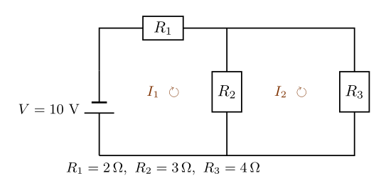
Figure 2.7. A two-loop resistor network with one source. The middle resistor R2 carries the difference I1−I2 of the two mesh currents.
2.4.4 Structures and Vibrations: the Stiffness Matrix#
In structural analysis the displacements x of the nodes under loads F satisfy Kx=F with a symmetric stiffness matrixK. The structure is stable (every load gives a unique displacement) exactly when detK=0. A zero determinant means the structure is a mechanism: it can move without any spring stretching.
ExampleTwo Masses on Springs
For Figure 2.8 the equilibrium equations are (k1+k2)x1−k2x2=0 and −k2x1+k2x2=F, i.e. K=[k1+k2−k2−k2k2],detK=k1k2>0. With k1=k2=100 N/m and F=10 N: K=[200−100−100100], detK=10000,
K−1=100001[100100100200], so [x1x2]=K−1[010]=[0.10.2] m.If the wall is removed (a free body with two masses and one spring), K=[k−k−kk] has detK=0. Physically, the whole system can translate freely. The equations then have no solution for a net force F=0 (the body accelerates) and infinitely many (a shifted copy) for balanced loads such as F=(5,−5).
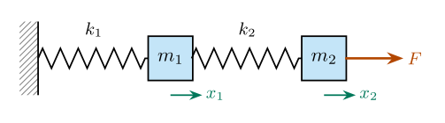
Figure 2.8. Two masses connected by springs to a fixed wall; x1,x2 are the displacements from equilibrium and F acts on the second mass.
Physics & Engineering
For free vibrations of the two-mass system (m1=m2=1 kg, k1=k2=100 N/m) one looks for solutions that vary as sinωt.
They exist only when K−ω2I is singular:
det(K−λI)=(200−λ)(100−λ)−10000=λ2−300λ+10000=0.λ=ω2=150±505,
so ω=5(5±1)≈16.18 and 6.18 rad/s. The condition det(A−λI)=0 is the characteristic equation; it is the heart of the next topic, eigenvalues and eigenvectors.
To pass a polynomial of degree 2, p(x)=ax2+bx+c, through three points (xi,yi) we must solve a 3×3 system whose coefficient matrix is the V=111x1x2x3x12x22x32,detV=(x2−x1)(x3−x1)(x3−x2). The determinant is nonzero exactly when the three x-values are distinct, which is why a unique interpolating parabola exists in that case (and not if two sample points share the same x). For (1,2), (2,3), (3,6): detV=1⋅2⋅1=2 and the solution is p(x)=x2−2x+3, see Figure 2.9.
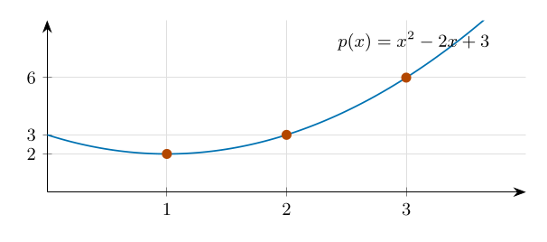
Figure 2.9. The unique parabola through (1,2), (2,3), (3,6). The Vandermonde determinant 2=0 guarantees that the three coefficients are determined uniquely by the three points.
If every row of A sums to 0, then A1=0 for 1=(1,…,1)T, so A cannot be invertible. This is why the stiffness matrix of a free structure and the Laplacian matrix of a network are always singular.
2. The size of detA does not measure “how invertible” A is.
The matrix 0.1I10 has det=10−10 yet is perfectly well behaved (A−1=10I). Conversely [1111.0001] has det=10−4 and is nearly singular: x+y=2, x+1.0001y=2 gives (x,y)=(2,0), while changing the right side to 2.0001 gives (1,1): a change of 10−4 in one right-hand side moves the answer by 1. Engineers measure this sensitivity by the condition number, not by the determinant.
3. Area-preserving does not mean shape-preserving.
The shear [101001] has determinant 1 (areas unchanged) but stretches lengths enormously. Only orthogonal matrices preserve lengths and angles; they have det=±1.
4. Integer matrices with integer inverses.
If A and A−1 both have integer entries then detA⋅detA−1=1 forces detA=±1. Conversely, detA=±1 makes A−1=±adj(A) integral. Such unimodular matrices (e.g. [2111] with inverse [1−1−12]) map the integer lattice onto itself, and are used in crystallography and in lattice-based cryptography.
5. A short history.
Determinants appeared in Japan in the 1680s (Seki Takakazu) and, independently, in Leibniz’s letters of 1693. Cramer published his rule in 1750, and Sarrus found his diagonal scheme in 1833. They were used for solving equations long before matrices became a language of their own in the 19th century.
Compute det(A) using the basket-weave method, where A=241102356.
Solution. Augmented matrix: 241102356241102. Downward: 2⋅0⋅6=0, 1⋅5⋅1=5, 3⋅4⋅2=24; sum 29. Upward: 1⋅0⋅3=0, 2⋅5⋅2=20, 6⋅4⋅1=24; sum 44. Hence det(A)=29−44=−15.
Problem 2Row Replacement
Compute detA for A=121252364.
Solution. Replacements (Property 3) do not change det. R2→R2−2R1 and R3→R3−R1 give 100210301, upper triangular, so detA=1⋅1⋅1=1.
Problem 34×4 by Laplace Expansion
Compute det(A) for A=1307200805004629.
Solution. Column 3 has a single nonzero entry a23=5, so det(A)=5(−1)2+3M23 with M23=107208429. Expand M23 along row 2 (only the entry 2 at position (2,3) survives): M23=2(−1)2+31728=−2(8−14)=12,det(A)=5⋅(−1)⋅12=−60.
Problem 4Scaling and Proportional Rows
Compute detA for A=14825103612.
Solution. Row 3 equals 2⋅row 2. Factoring 2 out of row 3 (Property 2) gives detA=2det144255366, and the new matrix has two equal rows, so its determinant is 0 (Property 6). Hence detA=0.
Problem 5When Is the Determinant Zero?
Find all x for which detx351x624x=0.
Solution. Expanding along the first row, det=xx64x−354x+235x6=x(x2−24)−(3x−20)+2(18−5x)=x3−37x+56. The cubic x3−37x+56=0 has no rational root (the candidates ±1,±2,±4,±7,±8,… all fail), but it changes sign three times, so it has three real irrational roots, approximately x≈−6.73,1.63,5.10 (Figure 2.10). For exactly these values the matrix is singular.
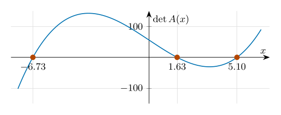
Figure 2.10. The determinant of Problem 5 as a function of x. Each of the three zero crossings is a value of x for which the matrix is singular.
Problem 6A Parameter Makes the Matrix Singular
For which k is A=10kk102k1 not invertible?
Solution. Expanding along column 1: detA=110k1+kk12k=1+k(k2−2)=k3−2k+1=(k−1)(k2+k−1). So A is singular for k=1 and k=2−1±5 (≈0.618,−1.618), and invertible for every other k.
Problem 7Inverse by the Adjugate
Find A−1 for A=102210341.
Solution.detA=1(1−0)−2(0−8)+3(0−2)=11=0. The cofactors are C=+1041−2031+2134−0241+1231−1034+0210−1220+1021=1−258−5−4−241,adjA=CT=18−2−2−545−41,A−1=11118−2−2−545−41.
Problem 8Linear Matrix Equation
Solve AX+B=C for X, where A=[1324], B=[1001], C=[5768].
Solution.AX=C−B=[4767], so X=A−1(C−B). With detA=−2, A−1=−21[4−3−21]=[−2231−21],X=[−2231−21][4767]=[−8+76−27−12+79−27]=[−125−5211].Check:AX=[−1+5−3+10−5+11−15+22]=[4767].
Find the inverses with the adjugate formula, and check with AA−1=I:
G=102210141, H=210031121.
Solve AX+B=C for X, where A=[2513], B=[1021], C=[7954].
Find all x with detx102x201x=0.
For which values of k is k101k101k singular? (These are exactly the k for which this tridiagonal matrix is not invertible; the same pattern appears in vibrating chains of masses.)
Let B=210−112013. Compute B−1 and verify BB−1=I. Then solve BX=102011210 for X.
Find the inverse of T=210121012 by Gauss–Jordan elimination.
The triangle with vertices (x1,y1), (x2,y2), (x3,y3) has area 21detx1x2x3y1y2y3111. (a) Use this to find the area of the triangle with vertices (2,1), (6,2), (3,6). (b) Are (0,1), (2,5), (3,7) collinear? (Collinear points give a triangle of area 0.)
A 3×3 matrix A has detA=−4. Find det(2A), det(A−1), det(A2), det(ATA−1) and det(adjA).
A chain wall–spring–m1–spring–m2–spring–wall has three springs of stiffness 100 N/m. A force 10 N acts on m1 only. Set up Kx=F and solve for the displacements.
The mesh equations of a circuit are 4I1−I2=6 and −I1+3I2=0. Solve for the currents by inverting the 2×2 matrix.
Find the quadratic p(x)=ax2+bx+c through (0,1), (1,3), (2,7) and verify that the Vandermonde determinant is nonzero.
Chapter 3Systems of Linear Equations
Learning Objectives
After studying this chapter you should be able to:
recognize linear equations and write a system in matrix and augmented-matrix form;
interpret a system geometrically (lines in R2, planes in R3) and explain why it has no solution, exactly one solution, or infinitely many solutions;
solve square systems by the inverse method and by Cramer’s rule;
solve any system by Gaussian and Gauss–Jordan elimination and describe the solution set with free parameters;
classify a system using the rank of its matrices (Kronecker–Capelli theorem) and solve homogeneous systems;
model problems from circuits, statics, chemistry, traffic and heat flow as linear systems, and interpret free variables and inconsistency physically.
When you first study mathematics, the equations you encounter are usually neat, orderly, and linear—meaning they follow predictable rules where causes and effects are directly proportional. However, the real world of physics and engineering is rarely so convenient; from the turbulent airflow over an aircraft wing to the rhythmic swing of a pendulum, nature is fundamentally nonlinear. While these complex equations are notoriously difficult and often impossible to solve using standard formulas, they govern how our universe truly operates. Even so, there are plenty of important linear equations as well, and to build the foundation needed for these advanced topics, we are going to learn the linear ones first. In this chapter, we study systems of linear equations.
Imagine a bakery that sells two types of cookies: chocolate chip cookies and oatmeal raisin cookies. The owner wants to figure out how many of each type to bake to meet a customer’s order. A customer places an order for a total of 100 cookies.
We’ll let x be the number of chocolate chip cookies.
We’ll let y be the number of oatmeal raisin cookies.
The first piece of information gives us our first equation x+y=100. The customer also specifies that the total cost of the order should be exactly $130. Suppose chocolate chip cookies cost $1.50 each and oatmeal raisin cookies cost $1.00 each. This gives us our second equation: 1.50x+1.00y=130. We now have two equations with two variables, a system of linear equations {x+y=1001.50x+1.00y=130. By solving this system, we can determine the exact number of chocolate chip and oatmeal raisin cookies needed to satisfy the customer’s order. For instance, substituting y=100−x into the second equation gives 1.50x+100−x=130, that is 0.50x=30, so x=60 and y=40: the bakery must bake 60 chocolate chip and 40 oatmeal raisin cookies.
Geometrically, each equation describes a straight line in the xy-plane, and the solution is the point where the two lines cross (Figure 3.1). This picture will be the key to understanding all the possible outcomes of a system of linear equations.
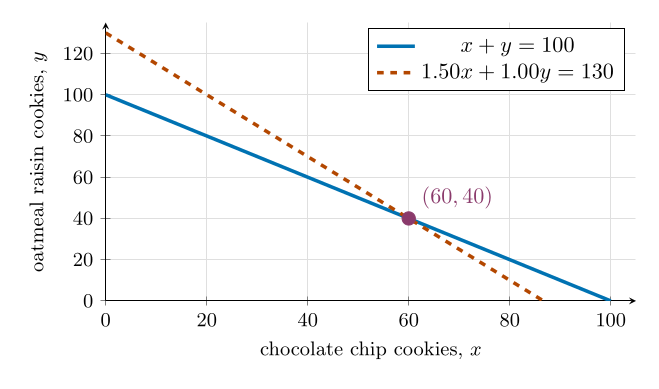
Figure 3.1. The order is the intersection point of two lines: 60 chocolate chip and 40 oatmeal raisin cookies.
Intuition
Why study systems of equations? Most real problems contain several unknown quantities that are tied together by several conditions: the unknown currents in a circuit, the unknown tensions in the cables of a structure, the unknown amounts of ingredients in a recipe. Each condition is one equation. Linear systems are the case that we can solve completely and always: by the end of the chapter you will be able to decide, for any such system, whether it has no solution, exactly one, or infinitely many, and to find them all. Even for nonlinear problems, engineers usually replace the true equations by linear ones near the point of interest (linearization), so this chapter is the workhorse behind much of applied mathematics.
A linear equation in n variables x1,x2,…,xn is an equation of the form a1x1+a2x2+⋯+anxn=b, where a1,a2,…,an are constants (called coefficients), b is a constant, and the variables x1,x2,…,xn appear only to the first power with no products, powers, or other functions applied to them.
Equation 1: 2x+3y−5z=7 is linear because it involves only first-degree terms in x,y,z with constant coefficients and no products or other functions.
Equation 2: x2+y−z=4 is nonlinear because of the x2 term, which has degree 2.
Equation 3: 4x−2y+sin(z)=0 is nonlinear because the sin(z) term involves a trigonometric function.
Equation 4: xy+3z=1 is nonlinear because the xy term is a product of variables.
Equation 5: 5x−4y+0z=2 is linear because it involves only first-degree terms, even though the coefficient of z is 0.
Common Mistake
Linear in the unknowns, not in the numbers. What matters is how the variables enter. The equation πx+2y=e is linear (the coefficients π,2 and the constant e are just numbers), but xy=1, x2+y=0, sinx+y=0 and x1+y=3 are not. A product of two unknowns is not allowed even when it is hidden: z(x+1)=2 contains the term zx.
A with m equations in n variables x1,x2,…,xn is a collection of m equations, each of the form ai1x1+ai2x2+⋯+ainxn=bi,i=1,2,…,m, where aij are the , bi are the , and x1,x2,…,xn are the . Symbolically, the system can be written as follows ⎩⎨⎧a11x1+a12x2+⋯+a1nxn=b1a21x1+a22x2+⋯+a2nxn=b2⋮am1x1+am2x2+⋯+amnxn=bm This system can be represented in as follows AX=B, where, A=a11a21⋮am1a12a22⋮am2⋯⋯⋱⋯a1na2n⋮amn,X=x1x2⋮xn,B=b1b2⋮bm are the m×n , , and , respectively. The of the system is the m×(n+1) matrix [A∣B]=a11a21⋮am1a12a22⋮am2⋯⋯⋱⋯a1na2n⋮amnb1b2⋮bm.
A to a system of linear equations with m equations in n variables x1,x2,…,xn is a set of values (s1,s2,…,sn) that satisfies each equation in the system when substituted for x1,x2,…,xn. The is the collection of all such solutions that satisfy the system simultaneously. A system that has at least one solution is called ; a system that has no solution is called . The possible outcomes for the solution set of a system of linear equations are as follows
: The system has exactly one solution, corresponding to a single point in Rn.
: The system has an infinite number of solutions, often described by one or more free variables.
: The system is inconsistent.
Why can a system never have exactly two solutions? Suppose X1=X2 are two different solutions of AX=B, so AX1=B and AX2=B. For every real number t, X1+t(X2−X1) is also a solution, because A(X1+t(X2−X1))=(1−t)AX1+tAX2=(1−t)B+tB=B. These solutions are all different (they fill the whole line through X1 and X2), so a system with two solutions automatically has infinitely many. Hence there are exactly three possibilities: no solution, one solution, or infinitely many solutions.
A linear equation ax+by=c (with a,b not both zero) is a line in the plane, and a linear equation ax+by+cz=d (with a,b,c not all zero) is a plane in space. A solution of a system is a point that lies on all these lines (planes) at the same time, so solving a system=finding the common intersection of lines or planes.
Two equations in two unknowns. Two lines in the plane can be positioned in exactly three ways (Figure 3.2): they cross in one point, they are parallel and distinct, or they coincide.
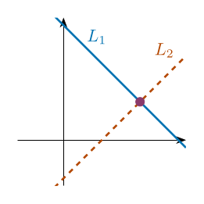
(a) One common point
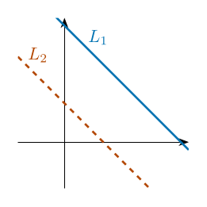
(b) No common point
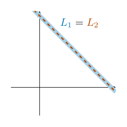
(c) All points common
Figure 3.2. Two equations in two unknowns. (a) x+y=3,x−y=1: the lines cross at (2,1), the unique solution. (b) x+y=3,x+y=1: parallel lines, no solution. (c) x+y=3,2x+2y=6: the same line, infinitely many solutions(t,3−t), t∈R.
Three equations in three unknowns. Now every equation is a plane. Figure 3.3 shows the three typical situations, one for each type of solution set.
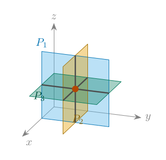
(a) One common point
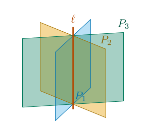
(b) A common line
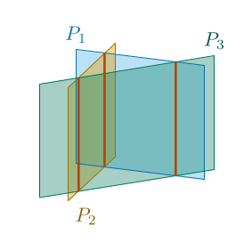
(c) Pairwise crossings only
Figure 3.3. Three equations in three unknowns (each equation is a plane Pi). (a) The planes meet in a single point, the unique solution (for example x=1,y=1,z=1). (b) The planes share a common line ℓ, so there are infinitely many solutions with one free parameter (for example x=0,y=0,x+y=0: the line ℓ is the z-axis). (c) Every two planes meet in a line, but the three lines are parallel and the planes have no point in common (a “triangular prism”): no solution (for example x=0,y=0,x+y=1).
These are not the only possible pictures. For instance, two planes may be parallel (no solution), or all three planes may coincide (a whole plane of solutions). The precise classification in terms of ranks (see Section 3.2.4) is summarized in Table 3.1.
Table 3.1. Relative position of three planes aix+biy+ciz=di, i=1,2,3, and the type of solution set.
rank(A)
rank([A∣B])
Position of the three planes
Solutions
3
3
the planes meet in exactly one point
unique
2
2
the planes share a common line (or two planes coincide and the third crosses them)
infinitely many, 1 parameter
1
1
all three planes coincide
infinitely many, 2 parameters
2
3
a triangular prism, or two parallel planes cut by a third one
none
1
2
all planes parallel, at least two of them distinct
none
Common Mistake
Pairwise intersections are not enough. In Figure 3.3(c) every two planes meet in a line, yet the three planes have no common point (the “triangular prism”). Checking pairs is never a substitute for solving the whole system. Likewise, two equations in three unknowns can never have a unique solution: two planes meet in a line or not at all.
A system with more equations than unknowns (m>n) is called : it asks more of the unknowns than they can usually give. In the plane (Figure 3.4), two lines already fix a point, and a third line must happen to pass through exactly that point.
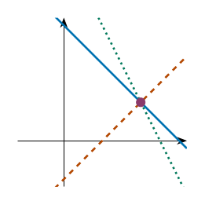
(a) Consistent: three lines through (2,1)
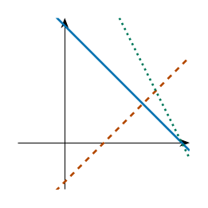
(b) Inconsistent: a small triangle, no common point
Figure 3.4. Three equations in two unknowns. (a) x+y=3, x−y=1, 2x+y=5 all pass through (2,1): the extra equation is redundant. (b) Replacing the last equation by 2x+y=6 makes the lines enclose a triangle with vertices (2,1), (3,0), (37,34): no point lies on all three.
Common Mistake
Counting equations does not decide the solution type. Three equations in three unknowns can still have no unique solution if one equation is a combination of the others, and four equations in three unknowns can have a unique solution if one of them is redundant (see the four-equation example in Section 3.2.3). What decides is the rank, not the number of equations.
3.2 Methods for Solving Systems of Linear Equations#
There are several ways to solve systems of linear equations. They can be introduced by grouping them into broad families:
: substitution, elimination, and Cramer’s rule.
: Gaussian elimination, LU decomposition, Cholesky decomposition, QR decomposition, the matrix inverse method, and SVD/pseudoinverse techniques.
Least-squares methods for overdetermined or inconsistent systems: the normal equations, QR least squares, and SVD-based least squares.
for large or sparse systems: the Jacobi method, the Gauss–Seidel method, successive over-relaxation (SOR), the conjugate gradient (CG) method, Krylov subspace methods such as BiCGSTAB, GMRES, and MINRES, multigrid methods, and preconditioned iterative methods.
: the Thomas algorithm for tridiagonal systems, fast Fourier/cyclic reduction, sparse direct solvers, and block and partitioned methods.
Thus, the choice of method depends on the size, structure, conditioning, and type of the linear system. We will study the following methods: the Inverse Method, Cramer’s Rule, and Gaussian Elimination and Gauss–Jordan Methods. Each method provides a systematic approach to finding the solution set, with varying advantages depending on the system’s properties. Table 3.2 gives an overview.
Table 3.2. Comparison of the methods for solving AX=B.
Method
Applies to
Requires
Best used when
Inverse method
square systems (m=n)
det(A)=0
several right-hand sides share the same A; theoretical arguments
Cramer’s rule
square systems
det(A)=0
very small systems (2×2, 3×3); formulas that contain parameters
Gaussian elimination
any m×n system
nothing
general purpose; detects all three types of solution sets
The Inverse Method applies to a system of n linear equations in n variables, written in matrix form as AX=B, where A is the n×n coefficient matrix, X is the variable matrix, and B is the constant matrix. If A is invertible (i.e., det(A)=0), multiplying both sides of AX=B from the left by A−1 gives A−1AX=A−1B, that is, X=A−1B. Since A−1 is unique, the solution is unique.
Intuition
Undo what A did.AX=B says “A turns the unknown X into the known B”. The inverse matrix is the machine that undoesA, so applying it to B recovers X. This is the matrix version of dividing ax=b by a: there is no “matrix division”, but multiplying by A−1 plays the same role.
Common Mistake
Multiply on the correct side, and do not invert needlessly. From AX=B one gets X=A−1B, never X=BA−1 (that would solve XA=B, and the sizes usually do not even match). Also, computing A−1 just to solve one system is wasteful: elimination solves it directly with less work and fewer rounding errors on a computer. The inverse pays off by hand when the same A must be used with several right-hand sides.
Pros:
Provides a direct formula for the solution when A is invertible.
Useful for systems where A−1 is already known or needed for multiple systems with the same A.
Cons:
Requires computing A−1, which can be computationally lengthy for large n.
Only applicable when A is square and invertible, limiting its use for systems with no unique solution or non-square matrices.
ExampleSolving a System Using the Inverse Method
Solve the system of linear equations using the inverse method. {2x+y=5x+3y=8
Solution. Write the system in matrix form AX=B, where, A=[2113],X=[xy],B=[58].
Compute det(A)=(2⋅3)−(1⋅1)=6−1=5. Since det(A)=0, A is invertible.
Thus, the solution is x=57, y=511. Check:2⋅57+511=525=5 and 57+3⋅511=540=8. Geometrically, the solution is the point where the two lines meet (Figure 3.5).
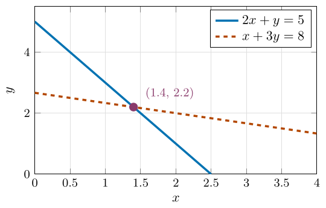
(a) Row picture: two lines meet at the solution.
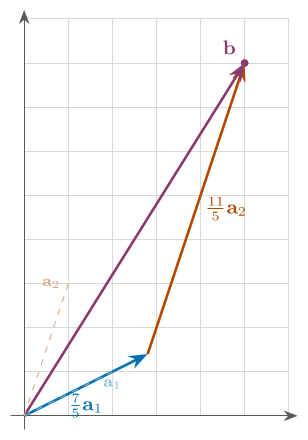
(b) Column picture: 57a1+511a2=b.
Figure 3.5. Two pictures of the same system 2x+y=5, x+3y=8. (a) Each equation is a line and the solution is their common point. (b) The columns a1=(2,1), a2=(1,3) and b=(5,8): the system asks for numbers x,y with xa1+ya2=b.
Intuition
Two ways to read AX=B. In the row picture every equation is a line (or plane) and the solution is where they all meet. In the column picture the same system says x1a1+x2a2+⋯+xnan=B, where a1,…,an are the columns of A: we are looking for the weights with which the columns must be combined to build B. A solution exists exactly when B can be built from the columns; it is unique when the columns are independent (only one way to build B); there are infinitely many solutions when the columns are dependent (several ways); and there is none when B lies outside everything the columns can reach. This second picture is the idea behind the rank criterion later in the chapter.
Cramer’s Rule provides a method to solve a system of n linear equations in n variables, written as AX=B, where A is an n×n coefficient matrix, X is the variable matrix, and B is the constant matrix. If det(A)=0, the system has a , and the solution for each variable xi is given by xi=det(A)det(Ai),i=1,2,…,n, where Ai is the matrix obtained by replacing the i-th column of A with B. For a system of two equations {a11x+a12y=b1a21x+a22y=b2 the rule gives x=a11a21a12a22b1b2a12a22=a11a22−a12a21b1a22−a12b2,y=a11a21a12a22a11a21b1b2=a11a22−a12a21a11b2−b1a21.Cases for Solutions:
If det(A)=0, the system has exactly one solution, computed using the formula above.
If det(A)=0 and det(Ai)=0 for all i, the system may have or , depending on consistency (determined by further analysis, e.g., row reduction).
If det(A)=0 and det(Ai)=0 for at least one i, the system has (inconsistent).
Common Mistake
Common mistakes with Cramer’s rule. Replace the columni of A (not a row) by B and leave the other columns where they are. Compute detAfirst: if it is 0, stop, because “xi=detAi/0” means nothing; use elimination instead to decide between no solution and infinitely many. Finally, detAi=0 for all i does not mean there is a solution: with detA=0 it only says that, if there is one, there are infinitely many.
Pros:
Provides an explicit formula for each variable when a unique solution exists.
Useful for small systems (n=2 or 3) and theoretical understanding.
Cons:
Requires computing n+1 determinants, which is computationally intensive for large n (with cofactor expansion the work grows factorially with n).
Inapplicable when det(A)=0, limiting its use for systems with no unique solution.
ExampleSolving a System Using Cramer's Rule
Solve the system of linear equations ⎩⎨⎧2x+y+z=5x+3y+2z=84x+y+3z=9 using Cramer’s Rule.
Solution. Write the system as AX=B, where A=214131123,X=xyz,B=589. Compute det(A) using row 1: det(A)=2(3⋅3−2⋅1)−1(1⋅3−2⋅4)+1(1⋅1−3⋅4)=8=0, so the system has a unique solution. Form A1,A2,A3: A1=589131123,A2=214589123,A3=214131589. Their determinants: det(A1)=5(3⋅3−2⋅1)−1(8⋅3−2⋅9)+1(8⋅1−3⋅9)=10,det(A2)det(A3)=2(8⋅3−2⋅9)−5(1⋅3−2⋅4)+1(1⋅9−8⋅4)=14,=2(3⋅9−8⋅1)−1(1⋅9−8⋅4)+5(1⋅1−3⋅4)=6. Hence, x=det(A)det(A1)=810=45,y=det(A)det(A2)=814=47,z=det(A)det(A3)=86=43.
ExampleNutrition Planning
A nutritionist wants to create a meal for a patient using three different food sources:
Food A: 200 calories, 10g protein, 20g carbs
Food B: 300 calories, 15g protein, 25g carbs
Food C: 150 calories, 5g protein, 10g carbs
The nutritionist needs the total meal to contain exactly 1100 calories, 50g of protein, and 90g of carbs. How many portions of each food source are needed?
Solution. Let x,y, and z be the number of portions of Foods A, B, and C, respectively. The nutritional requirements yield the system: 200x+300y+150z=110010x+15y+5z=5020x+25y+10z=90⟹4x+6y+3z=22⟹2x+3y+z=10⟹4x+5y+2z=18 We can now solve this system using Cramer’s Rule. The coefficient matrix, A, contains the coefficients of the variables, and the constant vector, B, contains the numbers on the right side of the equals sign. A=424635312,B=221018. The determinant of the coefficient matrix equals det(A)=43512−62412+32435=4(3⋅2−1⋅5)−6(2⋅2−1⋅4)+3(2⋅5−3⋅4)=−2. Since det(A)=−2=0, the system has a unique solution.
The nutritionist needs 1 portion of Food A, 2 portions of Food B, and 2 portions of Food C to meet the patient’s nutritional requirements. Check: calories 200+600+300=1100; protein 10+30+10=50; carbs 20+50+20=90.
3.2.3 Gaussian Elimination and Gauss–Jordan Methods#
Two systems of linear equations are if they have the same solution set. The idea behind Gaussian Elimination and Gauss–Jordan Elimination is to transform a system of linear equations into an equivalent system that is easier to solve using .
Definition
: The following operations on the augmented matrix of a system produce an :
: Swap two rows, denoted as Ri↔Rj.
: Multiply a row by a nonzero scalar k, denoted as kRi→Ri.
: Add a multiple of one row to a different row (i=j), denoted as Ri+kRj→Ri.
Two matrices A and B are , A∼B, if one can be obtained from the other by a finite sequence of these operations. To track operations, we use the above notations beside each step. Performing these operations on an [A∣B] transforms it into a new augmented matrix corresponding to an equivalent system.
Intuition
Why the solution set does not change. Every elementary row operation can be undone by another elementary row operation: a swap is undone by the same swap, scaling by k=0 is undone by scaling with 1/k, and Ri+kRj→Ri is undone by Ri−kRj→Ri. Therefore a solution of the old system is a solution of the new one and vice versa. This is also why scaling by k=0 is forbidden: it cannot be undone, and it would destroy an equation. A combined step such as 3R2−2R1→R2 is allowed, because it is row scaling by 3=0 followed by row addition (Figure 3.6).
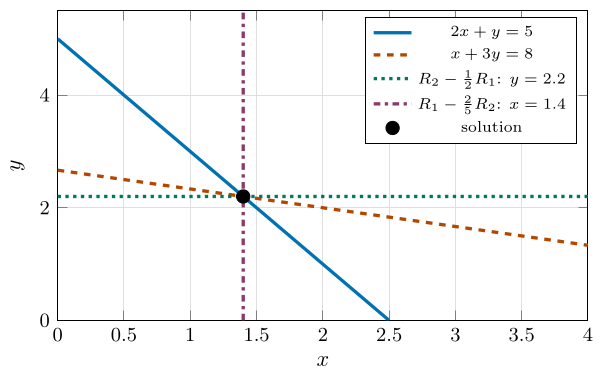
Figure 3.6. What elimination does to the picture. Starting from the lines 2x+y=5 and x+3y=8, the step R2−21R1→R2 replaces the second line by the horizontal line 2.5y=5.5, i.e. y=2.2; then R1−52R2→R1 replaces the first line by the vertical line 2x=2.8, i.e. x=1.4. All lines pass through the same point (1.4,2.2): row operations rotate the lines about the solution, which never moves.
Intuition
Why elimination is allowed to “rotate the lines”. Every line through the intersection point of two lines is a combination of their equations. A row operation replaces an equation by such a combination, so the new line still passes through the same point. Elimination uses this freedom to rotate the lines until they are horizontal and vertical, where the intersection can simply be read off.
ExampleElementary Row Operations
Consider the augmented matrix [A∣B]=1022583694710. Apply one of each elementary row operation:
(R1↔R3): 2018529631074.
(51R2→R2) on the original matrix: 102218356945710.
(R3−2R1→R3) on the original matrix: 100254363472.
DefinitionRow Echelon Form (REF) and Reduced Row Echelon Form (RREF)
A matrix is in (REF) if
all rows consisting entirely of zeros are at the bottom;
the first nonzero entry of each nonzero row (its or ) is 1 (a );
the pivot of each nonzero row is to the right of the pivot in the row above it.
A matrix is in (RREF) if it is in REF and, in addition, each column containing a pivot has zeros in all other entries.
These forms are achieved using and are used to solve by transforming the into a simpler equivalent form. The pivots of a matrix in REF form a “staircase” going down and to the right (Figure 3.7).
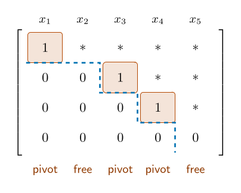
Figure 3.7. A matrix in row echelon form (∗ = any number). The boxed entries are the pivots; below the dashed staircase everything is 0. Columns with a pivot correspond to pivot (basic) variables, columns without a pivot to free variables.
Intuition
Why a staircase? Each nonzero row starts further to the right than the row above, so the last nonzero row involves the fewest variables. Solve it first and substitute upward (back-substitution): the staircase is the shape of a system that is “already half solved”.
Common Mistake
“Pivot” before and after scaling. While eliminating, the entry you are about to use is called the pivot even before it has been scaled to 1 (the boxed entries in the worked examples, such as −1 or 5); the definition of REF asks for leading 1’s, so scaling is the last step in each column. (Some books do not require leading 1’s; the pivot columns, the rank and the solution set are the same either way.) Also remember that a pivot must be a nonzero entry, and that in a skipped column there is no pivot at all.
ExampleIdentifying Row Echelon and Reduced Row Echelon Forms
Consider the following matrices (pivots are boxed):
100210040350 is in (all pivots equal 1, pivots shift to the right, the zero row is at the bottom), but it is not in reduced row echelon form, because the entry 2 above the second pivot is not zero.
100010001234 is in (it is in REF, and every pivot column has zeros above and below the pivot).
[011023] is not in row echelon form (the pivot in row 2 is to the left of the pivot in row 1).
Intuition
RREF is unique, REF is not. The (RREF) of a matrix is unique, meaning that every matrix has exactly one RREF, regardless of the sequence of elementary row operations used. However, the (REF) is not unique; different sequences of operations may lead to different REF representations of the same matrix. Uniqueness is why the RREF is the “canonical” form: two matrices of the same size are row-equivalent exactly when they have the same RREF.
Definition
A is a column that contains a pivot. A pivot variable, also known as a basic variable, is a variable that corresponds to a pivot column in a matrix that is in row-echelon form (REF) or reduced row-echelon form (RREF).
A in a is a variable that is not a in the row-echelon form (REF) or reduced row-echelon form (RREF) of the augmented matrix. Free variables arise when there are fewer pivot columns than the number of variables; if the system is consistent, the free variables can take any value, leading to .
To solve a system of linear equations using Gaussian elimination, we apply the following algorithm.
r←1
Common Mistake
Common mistakes in elimination.
Write down every step: errors hide in mental multi-step arithmetic.
Ri+kRj→Ri changes only row i; row j stays as it was. If you perform several operations in one step, use the old version of the row you are adding.
Never multiply a row by 0 (this destroys an equation), and do not replace a row by a multiple of itself with factor 0, e.g. R2−R2→R2.
Always check your answer in the original equations, not in the reduced ones: an early slip is carried into every later matrix, and the reduced system can look perfectly consistent.
If we continue the elimination process further, making zeros both below and above each pivot (instead of only below), the matrix will be transformed into the reduced row-echelon form. This extended procedure is called the Gauss–Jordan Elimination Method, and it allows the solution to be read directly from the final matrix without the need for back-substitution.
Physics & Engineering
On a computer one usually chooses as pivot the entry of largest absolute value in the column (partial pivoting) instead of the first nonzero one, because this reduces rounding errors. For hand calculations with small integers, any convenient nonzero pivot is fine.
Below, we discuss the pros and cons of Gaussian Elimination and Gauss–Jordan Elimination, along with how to determine the type of solution: no solution, unique solution, or infinitely many solutions.
:
: Efficient for large systems, requires fewer operations than Gauss–Jordan (roughly two thirds as many for large n), handles all solution types (, , or ).
: The main disadvantage is the need for back-substitution to find the values of the variables. This process can be more prone to human error in manual calculations.
: Transform the augmented matrix to :
If a row is [0⋯0∣c] with c=0, the system has .
If consistent (no such row) and there are free variables (columns without a pivot among the first n columns), the system has .
If consistent and there are no free variables (every variable column has a pivot), the system has a .
: In REF, express pivot variables in terms of free variables using back-substitution. Assign parameters (e.g., t, s) to free variables and write the solution as a parametric expression.
:
: Transforms to reduced row-echelon form (RREF), allowing direct reading of solutions, clear for identifying free variables.
: Requires more row operations than Gaussian Elimination, less efficient for very large systems.
: Transform the augmented matrix to RREF:
If a row is [0⋯0∣c] with c=0, the system has .
If consistent and there are columns without a pivot, the system has .
If consistent and every variable column has a pivot (the coefficient part is the identity matrix In, followed by zero rows if m>n), the system has a .
: In RREF, the solution is read directly. Free variables correspond to non-pivot columns. Assign parameters to free variables and express pivot variables as linear combinations of these parameters.
Common Mistake
A zero in the pivot position. During Gaussian Elimination or Gauss–Jordan Elimination, if the target pivot element in a column is zero and all elements below it in that column are also zero, then that column cannot produce a pivot. In this case, skip to the next column (in the same row) to continue the elimination process. The variable belonging to the skipped column is a free variable.
ExampleA Zero Pivot, Skipping a Column
Solve the system ⎩⎨⎧x+2y+z=42x+4y+3z=9x+2y+2z=5
Solution. The augmented matrix is 121242132495.Step 1: Pivot in column 1 (the boxed 1). Eliminate below: R2−2R1→R2,R3−R1→R3100200111411.Step 2: Look at column 2 in rows 2 and 3: both entries are 0, so this column cannot produce a pivot. We skip it (so y will be a free variable) and look for the pivot in column 3, row 2, which is already 1. Eliminate below: R3−R2→R3100200110410. The matrix is in row-echelon form. The pivots are in columns 1 and 3, so x and z are pivot variables and y is free (a free variable need not be the last one). The consistent system has infinitely many solutions.
Back-substitution: let y=t, t∈R. From row 2: z=1. From row 1: x+2t+1=4, so x=3−2t. The general solution is (x,y,z)=(3−2t,t,1),t∈R. Geometrically, the three planes share a common line, as in Figure 3.3(b).
ExampleGaussian Elimination
Solve the system ⎩⎨⎧x+y+z=42x+y−z=1x+2y+3z=73x+2y=5
Solution. We reduce the augmented matrix: 121311221−1304175R2−2R1→R2R3−R1→R3R4−3R1→R4∼10001−11−11−32−34−73−7−R2→R2∼1000111−1132−3473−7R3−R2→R3R4+R2→R4∼1000110013−1047−40−R3→R3∼1000110013104740.Back-substitution:z=4⟹y=7−3(4)=−5⟹x=4−(−5)−4=5.
Gauss–Jordan elimination continues from REF to RREF: 1000110013104740R2−3R3→R2R1−R3→R1∼1000110000100−540R1−R2→R1∼1000010000105−540. Thus, (x,y,z)=(5,−5,4).
ExampleSolving a 4×3 System with no Solution Using Gaussian Elimination
Solve the system ⎩⎨⎧x+y+z=42x+y−z=1x+2y+3z=7x+3y+4z=10.
Solution. We reduce the augmented matrix: 121111231−13441710R2−2R1→R2R3−R1→R3R4−R1→R4∼10001−1121−3234−736−R2→R2∼1000111213234736R3−R2→R3R4−2R2→R4∼1000110013−1−347−4−8−R3→R3∼10001100131−3474−8R4+3R3→R4∼1000110013104744. The last row gives 0=4, which is inconsistent. Thus, the system has no solution. Geometric interpretation: The first three planes intersect at the single point (5,−5,4), but the fourth plane does not pass through it (5−15+16=6=10).
ExampleSolving a 3×4 System (Infinitely Many Solutions)
Solve the system ⎩⎨⎧x+y+z+w=42x+y−z+w=1x+2y+3z+w=7
Solution. We reduce the augmented matrix: 1211121−13111417R2−2R1→R2R3−R1→R3∼1001−111−321−104−73−R2→R2∼100111132110473R3−R2→R3∼10011013−111−147−4−R3→R3∼100110131111474.
General Solution in vector form (t∈R): xyzw=particular solution5−540+tdirection vector−22−11,t∈R. The solution set is a line in R4.
Intuition
Free variables are degrees of freedom. Every pivot is one independent condition that determines one variable; the variables without a pivot are left unconstrained. The three equations of this example give only three conditions on four unknowns, so exactly one unknown (w) can be chosen freely and the others follow: the solutions form a line, a one-parameter family. In general the number of free variables is n−rank(A).
Common Mistake
Describing infinitely many solutions. The answer must show all variables in terms of the parameters; “w is free” alone is not an answer. The parameters belong to the free variables (columns without a pivot), and a free variable is not necessarily the last one (see the example with a skipped column). Different parametrizations describe the same set: (5−2t,−5+2t,4−t,t) and, with t=1+u, (3−2u,−3+2u,3−u,1+u) are the same line.
The of a matrix A, denoted rank(A), is the number of nonzero rows in the (REF) of A (equivalently, the number of pivots), or the dimension of the row space (or column space) of A. For an m×n matrix, 0≤rank(A)≤min(m,n).
The (also known as the or ) states that for a system of linear equations AX=B, where A is an m×n coefficient matrix, X is an n×1 variable matrix, and B is an m×1 constant matrix:
The system has a if and only if rank(A)=rank([A∣B]).
If rank(A)=rank([A∣B])=n, the system has a .
If rank(A)=rank([A∣B])=r<n, the system has with n−r free variables.
If rank(A)<rank([A∣B]), the system has (inconsistent).
The decision procedure is summarized in Figure 3.8. (Note that always rank(A)≤rank([A∣B])≤rank(A)+1, so only these two cases can occur.)
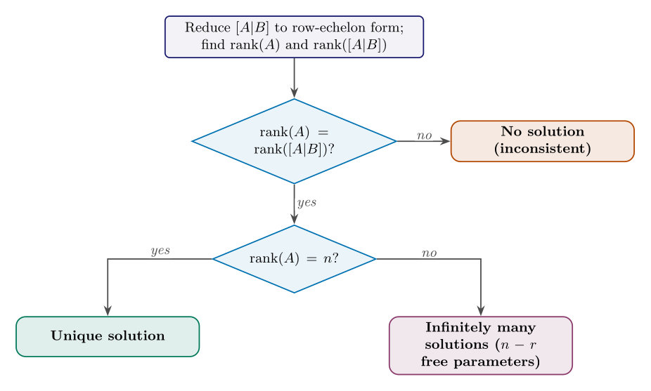
Figure 3.8. Classifying the system AX=B (n = number of variables, r=rank(A)).
Intuition
Why does the rank criterion work?rank(A) counts the independent columns of A. Adding the column B to form [A∣B] either leaves the rank unchanged (then B is built from the columns of A, i.e. the system has a solution: this is the column picture of Figure 3.5) or raises it by one (B points in a genuinely new direction and cannot be built: no solution). If rank(A)=n the columns are independent and there is only one way to build B; if rank(A)<n some column is a combination of the others and there are many ways, one free parameter for each missing rank.
Common Mistake
Compare rank(A) with rank([A∣B]), and with n. The constants column counts when you decide whether a row is zero: the row [000∣7] is nonzero in [A∣B] but zero in A. And rank(A)=rank([A∣B]) proves only that a solution exists; whether it is unique depends on comparing the common rank with the number of unknowns n.
ExampleFinding the Rank of a 3×4 Matrix
Find the rank of the matrix 1211121−13111 by reducing it to row-echelon form.
Solution. We reduce the matrix to row-echelon form: 1211121−13111R2−2R1→R2R3−R1→R3∼1001−111−321−10−R2→R2∼100111132110R3−R2→R3∼10011013−111−1−R3→R3∼100110131111.
The matrix is now in row-echelon form. Since there are 3 nonzero rows (pivots), rank(A)=3.
A of linear equations is a system of the form AX=0, where A is an m×n , X is the n×1 , and 0 is the m×1 zero matrix. Key properties:
A homogeneous system is always , as X=0 (the ) is a solution.
If rank(A)=n, the system has only the (X=0).
If rank(A)<n, the system has , including the trivial solution and , with n−rank(A) free variables.
In particular, if there are fewer equations than unknowns (m<n), then rank(A)≤m<n, so there is always a nontrivial solution.
Geometrically, every equation of a homogeneous system is a line (or plane) through the origin, so the origin always belongs to the solution set.
Common Mistake
Homogeneous does not mean “only the trivial solution”. The zero solution always exists, but the interesting question is whether there are others: yes if and only if rank(A)<n. Fewer equations than unknowns guarantees nontrivial solutions, but having at least as many equations as unknowns does not rule them out (dependent equations). For a square system the criterion is detA=0.
ExampleA Homogeneous System
Solve {x+y+z=0x−y+3z=0
Solution. Since m=2<n=3, there is a nontrivial solution. The coefficient matrix (the right-hand side stays 0 throughout) is reduced as follows: [111−113]R2−R1→R2∼[101−212]−21R2→R2∼[10111−1]. The pivots are in columns 1 and 2, so z is free. Let z=t. Then y=t and x=−y−z=−2t. The solutions are (x,y,z)=(−2t,t,t)=t(−2,1,1),t∈R. The two planes pass through the origin and meet in the line through the origin with direction (−2,1,1).
Intuition
Structure of the solution set: particular plus homogeneous. If Xp is one solution of AX=B (a particular solution), then every solution has the form X=Xp+Xh,where AXh=0, that is, the general solution of AX=B equals a particular solution plus the general solution of the associated homogeneous system AX=0. Indeed, A(Xp+Xh)=B+0=B, and conversely A(X−Xp)=B−B=0. In the 3×4 example above, Xp=(5,−5,4,0) and Xh=t(−2,2,−1,1). This is why the solution sets of consistent systems look like lines, planes, … that do not necessarily pass through the origin (Figure 3.9).
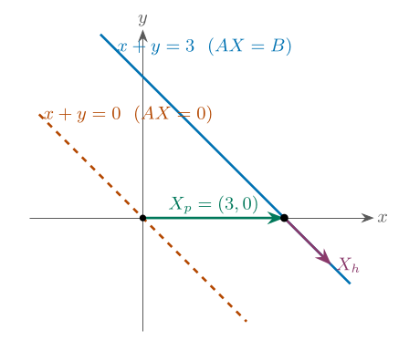
Figure 3.9. For the system x+y=3 (one equation, two unknowns): the homogeneous system x+y=0 has the solution line {t(1,−1)} through the origin (dashed). Adding one particular solution Xp=(3,0)shifts this line onto the solution line of x+y=3: the two solution sets are parallel.
3.3 Systems of Linear Equations in Physics and Engineering#
Whenever several unknown quantities are linked by balance laws, the model is a linear system: Kirchhoff’s laws in circuits, force equilibrium in structures, conservation of cars, water or heat in networks, conservation of atoms in chemistry, and fitting a curve through measured points. The mathematics of this chapter then has a direct physical meaning. A free variable is a quantity that the available laws cannot fix (a design freedom or a missing measurement); an inconsistent system signals contradictory data or a wrongly stated model; a unique solution means that the laws determine everything.
Kirchhoff’s voltage law says that the voltage rises and drops around every closed loop add up to zero. Assign a clockwise mesh current to each loop; a resistor shared by two loops carries the difference of the two mesh currents. A circuit with ℓ independent loops gives an ℓ×ℓ linear system for the currents.
ExampleA Two-Loop Circuit
In Figure 3.10(a) two batteries (12 V and 6 V) and three resistors (R1=2Ω, R2=3Ω, shared R3=4Ω) form two loops. The shared resistor carries I1−I2, so the voltage law gives {2I1+4(I1−I2)=123I2+4(I2−I1)=6⟺{6I1−4I2=12−4I1+7I2=6. Here detA=42−16=26=0, and Cramer’s rule gives I1=26126−47=26108≈4.15A,I2=266−4126=2684≈3.23A. The current in the shared resistor is I1−I2=1312≈0.92 A.
Check (energy balance). The batteries deliver 12⋅1354+6⋅1342=13900≈69.2 W, and the resistors dissipate 2I12+3I22+4(I1−I2)2=13900 W, the same.
Intuition
Why this system always has a unique solution. For a network of positive resistors the matrix of the mesh equations is always invertible. Physically this says that the currents are completely determined by the sources: a circuit cannot “choose” between two different current patterns. If such a system ever turns out singular, the circuit has been drawn incorrectly (for example a loop of ideal wires and ideal sources).
A body at rest is in equilibrium: the sum of all forces on it is zero, component by component. Each component is one linear equation in the unknown forces, even when the coefficients are sines and cosines of fixed angles (the unknowns are the tensions, not the angles).
ExampleA Hanging Load
A load of weight W=100 N hangs from two cables that make angles 30∘ (left) and 60∘ (right) with the horizontal (Figure 3.10(b)). Let T1,T2 be the tensions. Horizontal and vertical equilibrium give {−T1cos30∘+T2cos60∘=0T1sin30∘+T2sin60∘=100⟺{−23T1+21T2=021T1+23T2=100. From the first equation T2=3T1; substituting, 21T1+23T1=100, so T1=50 N and T2=503≈86.6 N. Check: the vertical components are 50⋅21+86.6⋅23=25+75=100 N.
(a) two mesh currents(b) forces at the knot
Figure 3.10. (a) A two-loop circuit; both batteries drive their mesh current clockwise (the long plate is the positive terminal), and the middle resistor carries I1−I2. (b) Free-body diagram of the knot where the load hangs: three forces in equilibrium, T1=50 N, T2≈86.6 N, W=100 N (arrow lengths are drawn to scale).
Common Mistake
Coefficients may be trigonometric, but the system is still linear. In statics the unknowns are forces; the angles are given numbers. Do not treat cos30∘ as a variable. Also, a structure with more unknown forces than independent equilibrium equations gives a system with free variables: such a structure is called statically indeterminate. Equilibrium alone cannot fix the forces; one must add the elasticity of the members.
A chemical equation is balanced when every kind of atom occurs equally often on both sides. For unknown coefficients x1,x2,… this is a homogeneous linear system (right-hand sides zero), and since only the ratios matter, we expect a nontrivial solution with a free parameter.
ExampleBurning Ethane
Balance x1C2H6+x2O2→x3CO2+x4H2O. Counting atoms of each kind: ⎩⎨⎧C:H:O:2x1=x36x1=2x42x2=2x3+x4260002−10−20−2−1000. Three equations in four unknowns: rank(A)=3<4, so there is one free variable. Let x1=t. Then x3=2t, x4=3t and x2=22x3+x4=27t. The smallest positive integer solution is t=2: 2C2H6+7O2→4CO2+6H2O. The free parameter is the size of the batch: doubling every coefficient gives the same reaction.
At every junction of a network the flow in equals the flow out (conservation of cars, water, current, …). Each junction gives one linear equation for the unknown flows on the roads or pipes.
ExampleA Traffic Ring
Four one-way streets form a ring (Figure 3.11(a)); x1,…,x4 are the flows (cars per hour) on the streets AB,BC,CD,DA, and cars enter and leave at the junctions as drawn. “In = out” at each junction: ⎩⎨⎧A:B:C:D:x4+300=x1+100x1+200=x2+300x2+150=x3+250x3=x4⟺⎩⎨⎧x1−x4=200x1−x2=100x2−x3=100x3−x4=0. The equations are consistent (the last three add up to x1−x4=200), but only three of them are independent, so one variable is free. With x4=t: (x1,x2,x3,x4)=(t+200,t+100,t,t),t≥0. The conservation law cannot tell how many cars circulate around the ring (t). One traffic count on any single street fixes the whole pattern: if 80 cars per hour are counted on DA, then (x1,x2,x3,x4)=(280,180,80,80).
To find the parabola p(x)=ax2+bx+c through three measured points, require p(xi)=yi. Each point gives one equation, linear in the unknown coefficientsa,b,c (the numbers xi2,xi,1 are the coefficients).
ExampleA Parabola Through Three Points
Fit p(x)=ax2+bx+c through (0,1), (1,0), (2,3): ⎩⎨⎧c=1a+b+c=04a+2b+c=3⟹{a+b=−14a+2b=2⟹a=2,b=−3,c=1. So p(x)=2x2−3x+1 (Figure 3.11(b)). The coefficient matrix is a Vandermonde matrix, with det=(1−0)(2−0)(2−1)=2=0, which is why there is exactly one parabola; it would be singular if two of the x-values coincided.
(a) traffic ring (green: in, red: out)(b) the parabola through three points
Figure 3.11. (a) Conservation of cars at the four junctions of a ring road leaves one free parameter, the circulating traffic t. (b) Three points determine exactly one parabola; the three equations for its coefficients form a system with a unique solution.
In steady state, a point inside a uniform rod has the average temperature of its neighbors. Writing this at every grid point gives a linear system whose size equals the number of grid points. Real models of heat flow, stress or fluid flow use thousands to millions of grid points, so the size of the system, not its difficulty, is the challenge: the methods of this chapter must be efficient, and they exploit the fact that almost all coefficients are zero.
ExampleA Rod with Fixed End Temperatures
A rod is held at 100∘C at the left end and 0∘C at the right end and divided into four equal parts. The temperatures T1,T2,T3 at the three interior points satisfy “each is the average of its neighbors”: ⎩⎨⎧2T1−T2=100−T1+2T2−T3=0−T2+2T3=0⟹T3=21T2,T1=23T2,2⋅23T2−T2=100, so T2=50, T1=75, T3=25: the temperature falls linearly from 100∘C to 0∘C (Figure 3.12). With n interior points the matrix is n×n with 2 on the diagonal and −1 next to it, and it is always invertible, so the temperature profile is unique.
Figure 3.12. Steady-state temperatures along the rod. The squares are the prescribed end temperatures; the dots are the unknowns T1,T2,T3 obtained from the linear system.
Common Mistake
A mathematical solution need not be a physical one. Flows, amounts of food, numbers of widgets and reaction coefficients must be non-negative (often integers). For the traffic ring this means t≥0; for the widgets of the homework it leaves a single solution among infinitely many real ones. Always substitute back and ask: does this make sense in the real problem? And with measured data, a system with more equations than unknowns is almost never exactly consistent; then one looks for the best compromise (least squares) instead of an exact solution.
The Chinese text The Nine Chapters on the Mathematical Art (compiled by about the first century CE, with older material) solves systems of linear equations by arranging the numbers in a rectangular array of counting rods and eliminating step by step: essentially what we now call Gaussian elimination. Gauss used the method in 1809 for orbit calculations, and the name stuck.
2. Who is Jordan?
The “Jordan” of Gauss–Jordan elimination is Wilhelm Jordan (1842–1899), a German geodesist who described the method in his handbook of surveying; he is often confused with the mathematician Camille Jordan. Cramer published his rule in 1750 (Maclaurin had found it earlier). The rank criterion carries several names (Rouché–Capelli in the West, Kronecker–Capelli in the East).
3. Why exactly three outcomes?
Linearity is the reason: the line through two solutions consists of solutions, so two solutions force infinitely many. A nonlinear equation behaves differently: x2=1 has exactly two solutions.
4. The cost of a method.
Gaussian elimination needs about 31n3 multiplications: for n=1000 unknowns that is about 3.3⋅108, a fraction of a second on a laptop. Cramer’s rule with cofactor expansion needs determinants that take of the order of n! operations: for n=20 already 2.4⋅1018, about 77 years at 109 operations per second. This is why software always uses elimination (LU factorization) and Cramer’s rule is a tool for small systems and for formulas.
5. Generic and special systems.
If the coefficients of a square system are chosen at random, the system almost surely has a unique solution: “no solution” and “infinitely many” are exceptional. Yet they appear constantly in practice, because real models have structure (symmetry, conservation laws, repeated equations), and that structure is exactly what makes the matrix singular. The traffic ring is an example: conservation makes one equation redundant.
6. Nearly parallel lines are dangerous.
Two lines that are almost parallel meet at a point that moves enormously when one line is shifted slightly (Figure 3.13). Systems of this kind are called ill-conditioned: a tiny error in the data (a measurement, a rounding) produces a large error in the solution. Mathematically the solution is unique, but numerically it is unreliable.
Figure 3.13. An ill-conditioned system. Shifting the second line up by only 0.05 moves the solution from (1,1) to (2,2): a shift of the data by 5% of a unit moves the answer by a whole unit, because the two lines are almost parallel.
7. Elimination works over other number systems.
All the algebra of this chapter uses only +,−,×,÷, so it works unchanged over the rationals, the complex numbers, or the integers modulo 2. Linear systems modulo 2 are used to decode error-correcting codes (the way a damaged message on a disc or in a data link is repaired), and rounding errors in floating-point arithmetic are the reason why numerical pivoting strategies exist.
For x, form A1=37513−1−121. det(A1)=3(3⋅1−2⋅(−1))−1(7⋅1−2⋅5)+(−1)(7⋅(−1)−3⋅5)=40. Thus, x=det(A)det(A1)=2540=58.
For y, form A2=213375−121. det(A2)=2(7⋅1−2⋅5)−3(1⋅1−2⋅3)+(−1)(1⋅5−7⋅3)=25. Thus, y=det(A)det(A2)=2525=1.
For z, form A3=21313−1375. det(A3)=2(3⋅5−7⋅(−1))−1(1⋅5−7⋅3)+3(1⋅(−1)−3⋅3)=30. Thus, z=det(A)det(A3)=2530=56.
ProblemSolving a System Using Gaussian Elimination
Solve the system ⎩⎨⎧2x+y−z=3x+3y+2z=73x−y+z=5 using Gaussian Elimination (compare with the previous problem: same system, different method).
Solution. We reduce the augmented matrix: 21313−1−12137521R1→R1∼113213−1−21212375R2−R1→R2R3−3R1→R3∼1002125−25−212525232112152R2→R2∼100211−25−211252351121R3+25R2→R3∼1002110−211523511651R3→R3∼1002110−21112351156.
ProblemGaussian Elimination Producing a Contradictory Row (No Solution)
Solve the system ⎩⎨⎧x+y+z=12x+y+z=2x+2y+z=4x+y+2z=5 using Gaussian Elimination.
Solution. We reduce the augmented matrix: 1211112111121245R2−2R1→R2R3−R1→R3R4−R1→R4∼10001−1101−1011034−R2→R2∼1000111011011034R3−R2→R3∼1000110011−111034−R3→R3∼10001100111110−34R4−R3→R4∼10001100111010−37. The last row [000∣7] represents 0=7, which is a contradiction. Thus, the system has .
Intuition
Why no column was skipped here. In this example no column had to be skipped, because a pivot was found in each of the columns 1, 2 and 3. The rank of the coefficient matrix is 3, the rank of the augmented matrix is 4. Skipping a column happens when the pivot position and everything below it are zero; see the example “A Zero Pivot, Skipping a Column” in Section 3.2.3.
ProblemDetermining Solution Type Using the Fundamental Theorem
Consider the system ⎩⎨⎧x+y+z=12x+y−z=2x+2y+3z=43x+2y+z=3 Determine the type of solution using the Fundamental Theorem of Systems of Linear Equations by computing rank(A) and rank([A∣B]).
Solution. We reduce [A∣B] to row-echelon form: 121311221−1311243R2−2R1→R2R3−R1→R3R4−3R1→R4∼10001−11−11−32−21030−R2→R2∼1000111−1132−21030R3−R2→R3R4+R2→R4∼1000110013−111030−R3→R3∼10001100131110−30R4−R3→R4∼10001100131010−33.
Thus, rank([A∣B])=4 and rank(A)=3. Since rank(A)=3<rank([A∣B])=4, the system has by the .
ProblemA System with a Parameter
For which values of a and b does the system ⎩⎨⎧x+y+z=1x+2y+3z=22x+3y+az=b have (i) a unique solution, (ii) no solution, (iii) infinitely many solutions?
Solution. Reduce the augmented matrix: 11212313a12bR2−R1→R2R3−2R1→R3∼10011112a−211b−2R3−R2→R3∼10011012a−411b−3. The behavior depends on the last row [00a−4∣b−3]:
If a=4: the last row has a pivot in column 3, so rank(A)=rank([A∣B])=3=n and the solution is unique (for every b).
If a=4 and b=3: the last row is [000∣b−3] with b−3=0, so rank(A)=2<rank([A∣B])=3: no solution.
If a=4 and b=3: the last row is zero, rank(A)=rank([A∣B])=2<3: infinitely many solutions with one free parameter (z=t, y=1−2t, x=t).
ProblemTwo Free Parameters and the Vector Form
Solve the system {x+2y−z+w=32x+4y−z+3w=8 and write the solution in vector form.
Solution. The augmented matrix is [1224−1−11338]. The operation R2−2R1→R2 gives [1020−111132]. Column 2 has no pivot (its entry in row 2 is 0), so we skip it and find the second pivot in column 3. The pivots are in columns 1 and 3: x,z are pivot variables and y,w are free. Put y=s, w=t. Row 2 gives z=2−t, and row 1 gives x=3−2s+z−w=3−2s+(2−t)−t=5−2s−2t. In vector form xyzw=5020+s−2100+t−20−11,s,t∈R. Here rank(A)=2 and n=4, so n−rank(A)=2 free parameters: the solution set is a plane in R4. (Check with s=t=0: 5−2=3 and 10−2=8.)
ProblemA Consistency Condition
For which right-hand sides (b1,b2,b3) is the system x+2y=b1,2x+4y=b2,3x+6y=b3 solvable? Describe the solutions.
Solution. Reduce the augmented matrix: R2−2R1→R2, R3−3R1→R3 give 100200b1b2−2b1b3−3b1. The system is consistent if and only if b2−2b1=0 and b3−3b1=0, that is, if B=b1(1,2,3) is a multiple of the first column. Then rank(A)=rank([A∣B])=1<2 and the solutions are x=b1−2y with y free. In the column picture: the two columns (1,2,3) and (2,4,6) are parallel, so they can only build vectors on one line through the origin.
ProblemA Homogeneous System and a Parameter
For which λ does the system ⎩⎨⎧x+2y−z=02x+3y+λz=0x+y+2z=0 have nontrivial solutions? Find them.
Solution. A square homogeneous system has nontrivial solutions exactly when detA=0. Expanding, det121231−1λ2=1(6−λ)−2(4−λ)+(−1)(2−3)=λ−1, so λ=1. For λ=1: R2−2R1→R2 and R3−R1→R3 give two identical rows (0,−1,3), hence a zero row after R3−R2→R3. So −y+3z=0, y=3z, and x=−2y+z=−5z: (x,y,z)=t(−5,3,1),t∈R. For every other λ only the trivial solution (0,0,0) exists.
Solve the following system using Cramer’s rule: ⎩⎨⎧x+2y−z=32x−y+3z=7x+y+z=4
Solve each system using Gaussian elimination, and describe the solution set geometrically (in which position are the planes?): ⎩⎨⎧x+y+z=62x+3y+z=10−x+y+2z=3,⎩⎨⎧x+y+z=42x+y−z=1x+2y+3z=72x+3y+4z=10,⎩⎨⎧x+2y−z=32x+4y−2z=6−x−2y+z=−3.
For the system ⎩⎨⎧x+y+z=22x+3y+z=5x+2y+2z=4 determine whether the system has a unique solution, no solution, or infinitely many solutions, and find all solutions.
A factory produces three types of widgets: A, B, and C. Each A uses 2 units of material X and 1 unit of material Y. Each B uses 1 unit of X and 2 units of Y. Each C uses 3 units of X and 1 unit of Y.
The factory has 10 units of X and 8 units of Y, and all the material is used up. Set up a system of linear equations, find all its solutions, and decide how many widgets of each type can be produced if the numbers of widgets must be non-negative integers.
Use a system of linear equations to determine the quantities of different foods needed to meet specific nutritional goals.
Problem: You need to design a simple, single-meal diet plan that meets three nutritional targets: calories, protein, and carbohydrates. You have three food options:
Grilled Chicken: 200 calories, 40g of protein, 0g of carbohydrates per serving.
Quinoa: 150 calories, 5g of protein, 25g of carbohydrates per serving.
Avocado: 250 calories, 3g of protein, 13g of carbohydrates per serving.
Your goal is to create a meal that has a total of 700 calories, 50g of protein, and 40g of carbohydrates. Let x, y, and z denote the number of servings of Grilled Chicken, Quinoa, and Avocado, respectively. Then the system of equations is:
Solve for x, y, and z to determine how many servings of each food are needed.
For which values of k does the system ⎩⎨⎧x+y+kz=1x+ky+z=1kx+y+z=1 have (a) a unique solution, (b) no solution, (c) infinitely many solutions? Use the rank criterion (Kronecker–Capelli) or Cramer’s rule.
Solve the system and write the solution in vector form: {x+y+2z−w=12x+2y+5z+w=7
For which (b1,b2,b3) is the system x−y=b1,2x+y=b2,3x=b3 solvable? When it is, solve it. Explain the condition in the column picture.
For which λ does ⎩⎨⎧x+2y+z=02x+λy+3z=0x+y+2z=0 have nontrivial solutions? Find all solutions for that λ.
(Chemistry) Balance (a) C3H8+O2→CO2+H2O and (b) Fe2O3+C→Fe+CO2 by setting up a homogeneous linear system. Give the smallest positive integer coefficients.
(Circuit) The mesh equations of a two-loop circuit are 5I1−2I2=9 and −2I1+4I2=0 (currents in amperes). Solve them by Cramer’s rule and find the current in the resistor shared by the two loops. Show that detA=0.
(Statics) A load of 200 N hangs from two cables. Find the tension in each cable (a) if both cables make 45∘ with the horizontal, (b) if both make 30∘. What happens to the tensions as the cables become flatter?
(Interpolation) Find the parabola y=ax2+bx+c through (0,2), (1,3), (2,8). Why is there no function y=ax2+bx+c through (1,2), (1,5), (2,3)?
(Traffic) In the traffic ring of this chapter a counter on street DA shows 80 cars per hour. Find all four flows. What is the smallest possible flow on street AB if no counter is available?